Chapter 19 Modeling a Count Outcome in Ohio SMART
In this chapter, I use a count outcome (# of poor physical health days out of the last 30) to demonstrate regression models for count outcomes.
Methods discussed in the chapter include the following:
- Ordinary Least Squares
- Poisson Regression
- Overdispersed Quasi-Poisson Regression
- Negative Binomial Regression
- Zero-Inflated Poisson Regression
- Zero-Inflated Negative Binomial Regression
- Hurdle Models with Poisson counts
- Hurdle Models with Negative Binomial counts
- Tobit Regression
19.1 Preliminaries
19.2 A subset of the Ohio SMART data
Let’s consider the following data. I’ll include the subset of all observations in smart_oh with complete data on these 14 variables.
| Variable | Description |
|---|---|
SEQNO |
Subject identification code |
mmsa_name |
Name of statistical area |
genhealth |
Five categories (E, VG, G, F, P) on general health |
physhealth |
Now thinking about your physical health, which includes physical illness and injury, for how many days during the past 30 days was your physical health not good? |
menthlth |
Now thinking about your mental health, which includes stress, depression, and problems with emotions, for how many days during the past 30 days was your mental health not good? |
healthplan |
1 if the subject has any kind of health care coverage, 0 otherwise |
costprob |
1 indicates Yes to “Was there a time in the past 12 months when you needed to see a doctor but could not because of cost?” |
agegroup |
13 age groups from 18 through 80+ |
female |
1 if subject is female |
incomegroup |
8 income groups from < 10,000 to 75,000 or more |
bmi |
body-mass index |
smoke100 |
1 if Yes to “Have you smoked at least 100 cigarettes in your entire life?” |
alcdays |
# of days out of the past 30 on which the subject had at least one alcoholic drink |
sm_oh_A <- smart_oh %>%
select(SEQNO, mmsa_name, genhealth, physhealth,
menthealth, healthplan, costprob,
agegroup, female, incomegroup, bmi, smoke100,
alcdays) %>%
drop_na19.2.1 Is age group associated with physhealth?
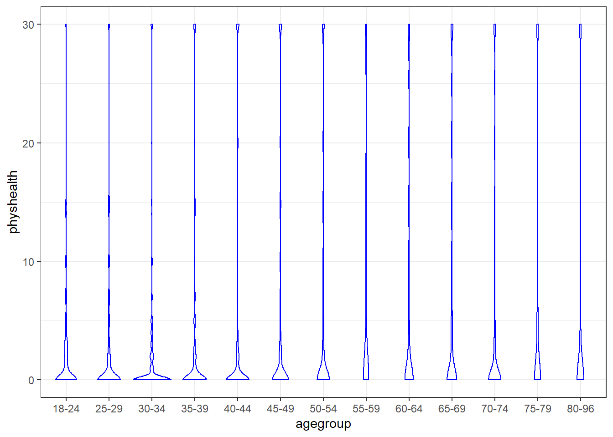
It’s hard to see much of anything here. The main conclusion seems to be that 0 is by far the most common response.
Here’s a table by age group of:
- the number of respondents in that age group,
- the group’s mean
physhealthresponse (remember that these are the number of poor physical health days in the last 30), - their median
physhealthresponse (which turns out to be 0 in each group), and - the percentage of group members who responded 0.
sm_oh_A %>% group_by(agegroup) %>%
summarize(n = n(), mean = round(mean(physhealth),2),
median = median(physhealth),
percent_0s = round(100*sum(physhealth == 0)/n,1))# A tibble: 13 x 5
agegroup n mean median percent_0s
<fct> <int> <dbl> <dbl> <dbl>
1 18-24 297 2.31 0 59.6
2 25-29 259 2.53 0 66
3 30-34 296 2.14 0 69.3
4 35-39 366 3.67 0 63.9
5 40-44 347 4.18 0 62.8
6 45-49 409 4.46 0 63.3
7 50-54 472 4.76 0 60.4
8 55-59 608 6.71 0 57.1
9 60-64 648 5.9 0 57.6
10 65-69 604 6.09 0 56
11 70-74 490 4.89 0 61.6
12 75-79 338 6.38 0 54.1
13 80-96 374 6.1 0 56.4We can see a real change between the 45-49 age group and the 50-54 age group. The mean difference is clear from the table above, and the plot below (of the percentage with a zero response) in each age group identifies the same story.
sm_oh_A %>% group_by(agegroup) %>%
summarize(n = n(),
percent_0s = round(100*sum(physhealth == 0)/n,1)) %>%
ggplot(aes(y = agegroup, x = percent_0s)) +
geom_label(aes(label = percent_0s)) +
labs(x = "% with no Bad Physical Health Days in last 30",
y = "Age Group")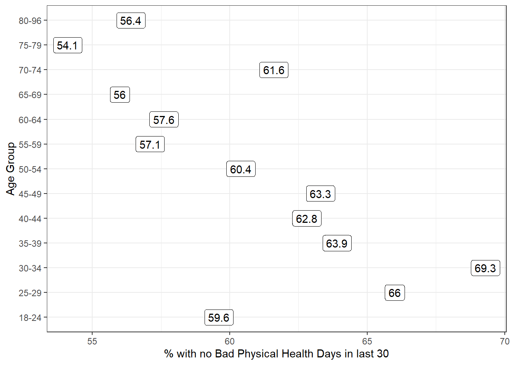
It looks like we have a fairly consistent result in the younger age range (18-49) or the older range (50+). On the theory that most of the people reading this document are in that younger range, we’ll focus on those respondents in what follows.
19.3 Exploratory Data Analysis (in the 18-49 group)
We want to predict the 0-30 physhealth count variable for the 18-49 year old respondents.
To start, we’ll use two predictors:
- the respondent’s body mass index, and
- whether the respondent has smoked 100 cigarettes in their lifetime.
We anticipate that each of these variables will have positive associations with the physhealth score. That is, heavier people, and those who have used tobacco will be less healthy, and thus have higher numbers of poor physical health days.
19.3.1 Build a subset of those ages 18-49
First, we’ll identify the subset of respondents who are between 18 and 49 years of age.
sm_oh_A_young.raw <- sm_oh_A %>%
filter(agegroup %in% c("18-24", "25-29", "30-34",
"35-39", "40-44", "45-49")) %>%
droplevels()
sm_oh_A_young.raw %>%
select(physhealth, bmi, smoke100, agegroup) %>%
summary physhealth bmi smoke100 agegroup
Min. : 0.000 Min. :14.00 Min. :0.0000 18-24:297
1st Qu.: 0.000 1st Qu.:23.74 1st Qu.:0.0000 25-29:259
Median : 0.000 Median :27.32 Median :0.0000 30-34:296
Mean : 3.337 Mean :28.80 Mean :0.4189 35-39:366
3rd Qu.: 2.000 3rd Qu.:32.44 3rd Qu.:1.0000 40-44:347
Max. :30.000 Max. :75.52 Max. :1.0000 45-49:409 19.3.2 Centering bmi
I’m going to center the bmi variable to help me interpret the final models later.
Now, let’s look more closely at the distribution of these variables, starting with our outcome.
19.3.3 Distribution of the Outcome
What’s the distribution of physhealth?
ggplot(sm_oh_A_young.raw, aes(x = physhealth)) +
geom_histogram(binwidth = 1, fill = "red", col = "white")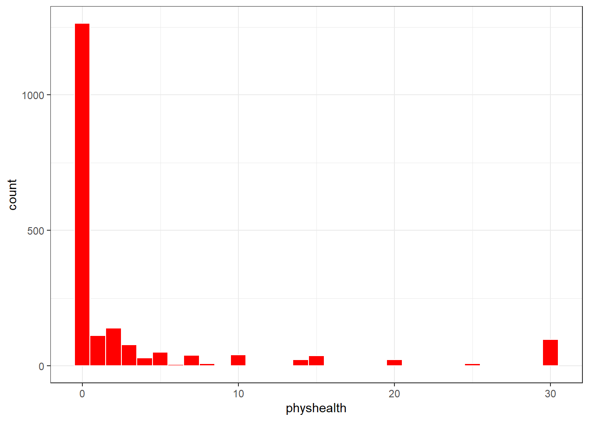
# A tibble: 3 x 3
`physhealth == 0` `physhealth == 30` n
<lgl> <lgl> <int>
1 FALSE FALSE 612
2 FALSE TRUE 98
3 TRUE FALSE 1264Most of our respondents said zero, the minimum allowable value, although there is also a much smaller bump at 30, the maximum value we will allow.
Dealing with this distribution is going to be a bit of a challenge. We will develop a series of potential modeling approaches for this sort of data, but before we do that, let’s look at the distribution of our other two variables, and the pairwise associations, in a scatterplot matrix.
19.3.4 Scatterplot Matrix
Now, here’s the scatterplot matrix for those 1974 subjects, using the centered bmi data captured in the bmi_c variable.
Registered S3 method overwritten by 'GGally':
method from
+.gg ggplot2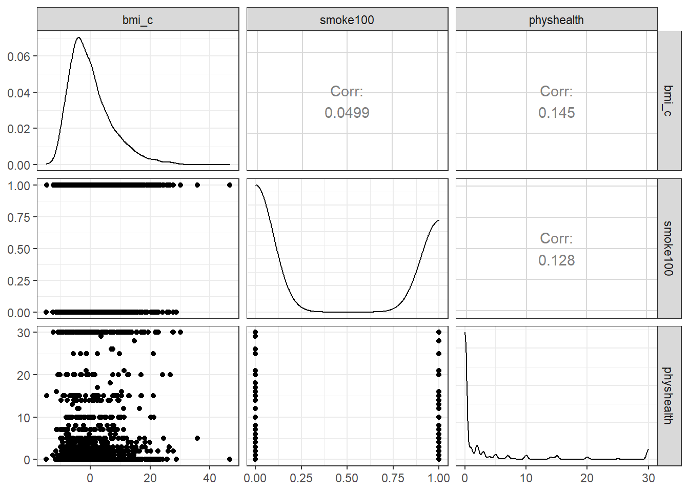
So bmi_c and smoke100 each have modest positive correlations with physhealth and only a very small correlation with each other. Here are some summary statistics for this final data.
19.3.5 Summary of the final subset of data
Remember that since the mean of bmi is 28.8, the bmi_c values are just bmi - 28.8 for each subject.
bmi bmi_c smoke100 physhealth
Min. :14.00 Min. :-14.797 Min. :0.0000 Min. : 0.000
1st Qu.:23.74 1st Qu.: -5.057 1st Qu.:0.0000 1st Qu.: 0.000
Median :27.32 Median : -1.477 Median :0.0000 Median : 0.000
Mean :28.80 Mean : 0.000 Mean :0.4189 Mean : 3.337
3rd Qu.:32.44 3rd Qu.: 3.643 3rd Qu.:1.0000 3rd Qu.: 2.000
Max. :75.52 Max. : 46.723 Max. :1.0000 Max. :30.000 19.4 Modeling Strategies Explored Here
We are going to predict physhealth using bmi_c and smoke100.
- Remember that
physhealthis a count of the number of poor physical health days in the past 30. - As a result,
physhealthis restricted to taking values between 0 and 30.
We will demonstrate the use of each of the following regression models, some of which are better choices than others.
- Ordinary Least Squares (OLS) predicting
physhealth - OLS predicting the logarithm of (
physhealth+ 1) - Poisson regression, which is appropriate for predicting counts
- Poisson regression, adjusted to account for overdispersion
- Negative binomial regression, also used for counts and which adjusts for overdispersion
- Zero-inflated models, in both the Poisson and Negative Binomial varieties, which allow us to fit counts that have lots of zero values
- A “hurdle” model, which allows us to separately fit a model to predict the incidence of “0” and then a separate model to predict the value of
physhealthwhen we know it is not zero - Tobit regression, where a lower (and upper) bound may be set, but the underlying model describes a latent variable which can extend beyond these boundaries
19.4.1 What Will We Demonstrate?
With each approach, we will fit the model and specify procedures for doing so in R. Then we will:
- Specify the fitted model equation
- Interpret the model’s coefficient estimates and 95% confidence intervals around those estimates.
- Perform a test of whether each variable adds value to the model, when the other one is already included.
- Store the fitted values and appropriate residuals for each model.
- Summarize the model’s apparent R2 value, the proportion of variation explained, and the model log likelihood.
- Perform checks of model assumptions as appropriate.
- Describe how predictions would be made for two new subjects.
- Harry has a BMI that is 10 kg/m2 higher than the average across all respondents and has smoked more than 100 cigarettes in his life.
- Sally has a BMI that is 5 kg/m2 less than the average across all respondents and has not smoked more than 100 cigarettes in her life.
In addition, for some of the new models, we provide a little of the mathematical background, and point to other resources you can use to learn more about the model.
19.4.2 Extra Data File for Harry and Sally
To make our lives a little easier, I’ll create a little tibble containing the necessary data for Harry and Sally.
# A tibble: 2 x 3
subj bmi_c smoke100
<chr> <dbl> <dbl>
1 Harry 10 1
2 Sally -5 019.5 The OLS Approach
Call:
lm(formula = physhealth ~ bmi_c + smoke100, data = sm_oh_A_young)
Residuals:
Min 1Q Median 3Q Max
-11.1480 -3.6650 -2.2417 -0.7798 28.8789
Coefficients:
Estimate Std. Error t value Pr(>|t|)
(Intercept) 2.57048 0.21647 11.874 < 2e-16 ***
bmi_c 0.14440 0.02304 6.267 4.51e-10 ***
smoke100 1.83056 0.33469 5.469 5.09e-08 ***
---
Signif. codes: 0 '***' 0.001 '**' 0.01 '*' 0.05 '.' 0.1 ' ' 1
Residual standard error: 7.328 on 1971 degrees of freedom
Multiple R-squared: 0.03562, Adjusted R-squared: 0.03464
F-statistic: 36.4 on 2 and 1971 DF, p-value: 3.003e-16 2.5 % 97.5 %
(Intercept) 2.14593964 2.995020
bmi_c 0.09921376 0.189592
smoke100 1.17418006 2.48693819.5.1 Interpreting the Coefficients
- The intercept, 2.57, is the predicted
physhealth(in days) for a subject with average BMI who has not smoked 100 cigarettes or more. - The
bmi_ccoefficient, 0.144, indicates that for each additional kg/m2 of BMI, while holdingsmoke100constant, the predictedphyshealthvalue increases by 0.144 day. - The
smoke100coefficient, 1.83, indicates that a subject who has smoked 100 cigarettes or more has a predictedphyshealthvalue 1.83 days larger than another subject with the samebmibut who has not smoked 100 cigarettes.
19.5.2 Store fitted values and residuals
We can use broom to do this. Here, for instance, is a table of the first six predictions and residuals.
sm_ols_1 <- augment(mod_ols1, sm_oh_A_young)
sm_ols_1 %>% select(physhealth, .fitted, .resid) %>% head()# A tibble: 6 x 3
physhealth .fitted .resid
<dbl> <dbl> <dbl>
1 0 2.13 -2.13
2 0 2.25 -2.25
3 0 3.14 -3.14
4 30 5.72 24.3
5 0 3.20 -3.20
6 0 3.87 -3.87It turns out that 0 of the 1974 predictions that we make are below 0, and the largest prediction made by this model is 11.15 days.
19.5.3 Specify the R2 and log(likelihood) values
The glance function in the broom package gives us the raw and adjusted R2 values, and the model log(likelihood), among other summaries.
# A tibble: 1 x 11
r.squared adj.r.squared sigma statistic p.value df logLik AIC BIC
<dbl> <dbl> <dbl> <dbl> <dbl> <dbl> <dbl> <dbl> <dbl>
1 0.036 0.035 7.33 36.4 0 3 -6731. 13470. 13492.
# ... with 2 more variables: deviance <dbl>, df.residual <dbl>Here, we have
| Model | R2 | log(likelihood) |
|---|---|---|
| OLS | 0.036 | -6730.98 |
19.5.4 Check model assumptions
Here is a plot of the residuals vs. the fitted values for this OLS model.
ggplot(sm_ols_1, aes(x = .fitted, y = .resid)) +
geom_point() +
labs(title = "Residuals vs. Fitted Values for OLS model")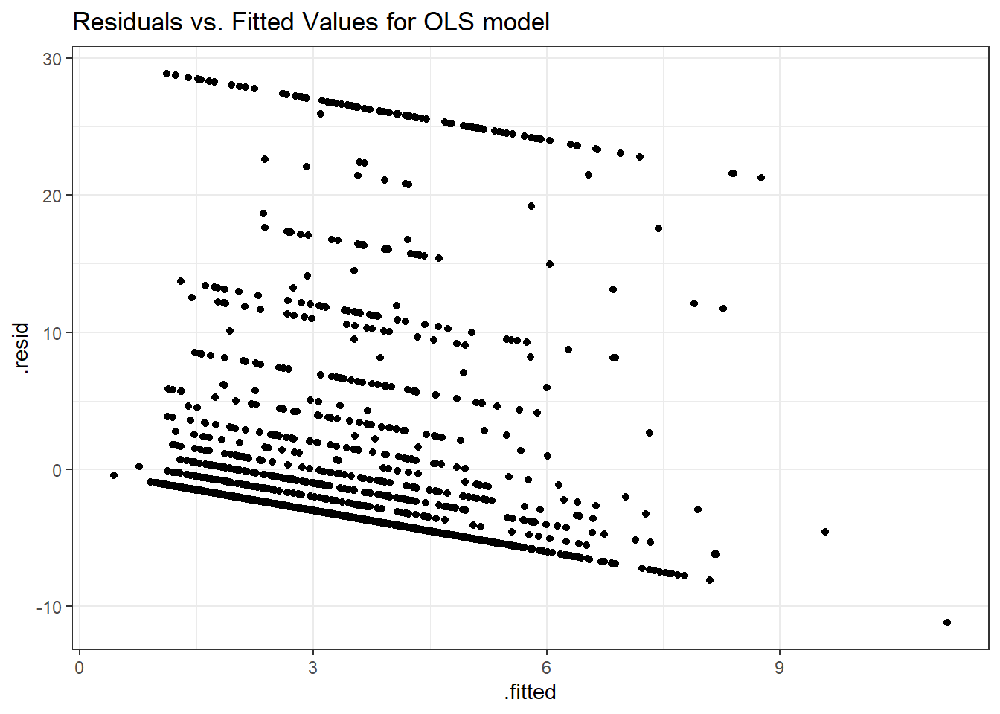
As usual, we can check OLS assumptions (linearity, homoscedasticity and normality) with R’s complete set of residual plots.
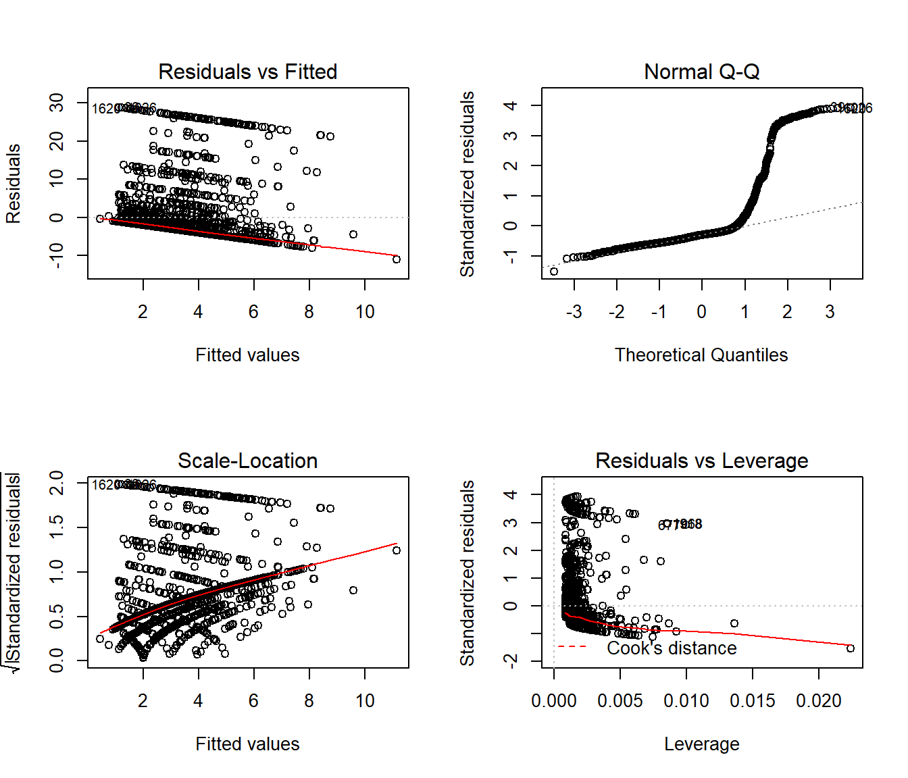
We see the problem with our residuals. They don’t follow a Normal distribution.
19.5.5 Predictions for Harry and Sally
fit lwr upr
1 5.845068 -8.540678 20.23081
2 1.848466 -12.529911 16.22684The prediction for Harry is 5.8 days, and for Sally is 1.8 days. The prediction intervals for each include some values below 0, even though 0 is the smallest possible value.
19.5.6 Notes
- This model could have been estimated using the
olsfunction in thermspackage, as well.
dd <- datadist(sm_oh_A_young)
options(datadist = "dd")
(mod_ols1a <- ols(physhealth ~ bmi_c + smoke100,
data = sm_oh_A_young, x = TRUE, y = TRUE))Linear Regression Model
ols(formula = physhealth ~ bmi_c + smoke100, data = sm_oh_A_young,
x = TRUE, y = TRUE)
Model Likelihood Discrimination
Ratio Test Indexes
Obs 1974 LR chi2 71.59 R2 0.036
sigma7.3275 d.f. 2 R2 adj 0.035
d.f. 1971 Pr(> chi2) 0.0000 g 1.570
Residuals
Min 1Q Median 3Q Max
-11.1480 -3.6650 -2.2417 -0.7798 28.8789
Coef S.E. t Pr(>|t|)
Intercept 2.5705 0.2165 11.87 <0.0001
bmi_c 0.1444 0.0230 6.27 <0.0001
smoke100 1.8306 0.3347 5.47 <0.0001
19.6 OLS model on log(physhealth + 1) days
We could try to solve the problem of fitting some predictions below 0 by log-transforming the data, so as to force values to be at least 0. Since we have undefined values when we take the log of 0, we’ll add one to each of the physhealth values before taking logs, and then transform back when we want to make predictions.
mod_ols_log1 <- lm(log(physhealth + 1) ~ bmi_c + smoke100,
data = sm_oh_A_young)
summary(mod_ols_log1)
Call:
lm(formula = log(physhealth + 1) ~ bmi_c + smoke100, data = sm_oh_A_young)
Residuals:
Min 1Q Median 3Q Max
-1.7079 -0.7060 -0.5050 0.5054 3.0485
Coefficients:
Estimate Std. Error t value Pr(>|t|)
(Intercept) 0.577464 0.030989 18.635 < 2e-16 ***
bmi_c 0.019127 0.003299 5.799 7.77e-09 ***
smoke100 0.236782 0.047911 4.942 8.38e-07 ***
---
Signif. codes: 0 '***' 0.001 '**' 0.01 '*' 0.05 '.' 0.1 ' ' 1
Residual standard error: 1.049 on 1971 degrees of freedom
Multiple R-squared: 0.03005, Adjusted R-squared: 0.02907
F-statistic: 30.53 on 2 and 1971 DF, p-value: 8.74e-14 2.5 % 97.5 %
(Intercept) 0.51668985 0.63823781
bmi_c 0.01265792 0.02559578
smoke100 0.14282015 0.3307446919.6.1 Interpreting the Coefficients
- The intercept, 0.58, is the predicted logarithm of (
physhealth+ 1) (in days) for a subject with average BMI who has not smoked 100 cigarettes or more.- We can exponentiate to see that the prediction for (
physhealth+ 1) here isexp(0.58)= 1.79 so the predictedphyshealthfor a subject with average BMI who has not smoked 100 cigarettes is 0.79 days.
- We can exponentiate to see that the prediction for (
- The
bmi_ccoefficient, 0.019, indicates that for each additional kg/m2 of BMI, while holdingsmoke100constant, the predicted logarithm of (physhealth+ 1) increases by 0.019 - The
smoke100coefficient, 0.24, indicates that a subject who has smoked 100 cigarettes or more has a predicted log of (physhealth+ 1) value that is 0.24 larger than another subject with the samebmibut who has not smoked 100 cigarettes.
19.6.2 Store fitted values and residuals
We can use broom to help us with this. Here, for instance, is a table of the first six predictions and residuals, on the scale of our transformed response, log(physhealth + 1).
sm_ols_log1 <- augment(mod_ols_log1, sm_oh_A_young)
sm_ols_log1 <- sm_ols_log1 %>%
mutate(outcome = log(physhealth + 1))
sm_ols_log1 %>%
select(physhealth, outcome, .fitted, .resid) %>%
head()# A tibble: 6 x 4
physhealth outcome .fitted .resid
<dbl> <dbl> <dbl> <dbl>
1 0 0 0.520 -0.520
2 0 0 0.535 -0.535
3 0 0 0.647 -0.647
4 30 3.43 0.995 2.44
5 0 0 0.655 -0.655
6 0 0 0.744 -0.744Note that the outcome used in this model is log(physhealth + 1), so the .fitted and .resid values react to that outcome, and not to our original physhealth.
Another option would be to calculate the model-predicted physhealth, which I’ll call ph for a moment, with the formula:
\[ ph = e^{.fitted} - 1 \]
sm_ols_log1 <- sm_ols_log1 %>%
mutate(pred.physhealth = exp(.fitted) - 1,
res.physhealth = physhealth - pred.physhealth)
sm_ols_log1 %>%
select(physhealth, pred.physhealth, res.physhealth) %>%
head()# A tibble: 6 x 3
physhealth pred.physhealth res.physhealth
<dbl> <dbl> <dbl>
1 0 0.681 -0.681
2 0 0.708 -0.708
3 0 0.909 -0.909
4 30 1.70 28.3
5 0 0.926 -0.926
6 0 1.10 -1.10 It turns out that 0 of the 1974 predictions that we make are below 0, and the largest prediction made by this model is 4.52 days.
19.6.3 Specify the R2 and log(likelihood) values
The glance function in the broom package gives us the raw and adjusted R2 values, and the model log(likelihood), among other summaries.
# A tibble: 1 x 11
r.squared adj.r.squared sigma statistic p.value df logLik AIC BIC
<dbl> <dbl> <dbl> <dbl> <dbl> <dbl> <dbl> <dbl> <dbl>
1 0.03 0.029 1.05 30.5 0 3 -2894. 5796. 5818.
# ... with 2 more variables: deviance <dbl>, df.residual <dbl>Here, we have
| Model | Scale | R2 | log(likelihood) |
|---|---|---|---|
| OLS on log | log(physhealth + 1) |
0.03 | -2893.83 |
19.6.4 Getting R2 on the scale of physhealth
We could find the correlation of our model-predicted physhealth values, after back-transformation, and our observed physhealth values, if we wanted to, and then square that to get a sort of \(R^2\) value. But this model is not linear in physhealth, of course, so it’s not completely comparable to our prior OLS model.
19.6.5 Check model assumptions
As usual, we can check OLS assumptions (linearity, homoscedasticity and normality) with R’s complete set of residual plots. Of course, these residuals and fitted values are now on the log(physhealth + 1) scale.
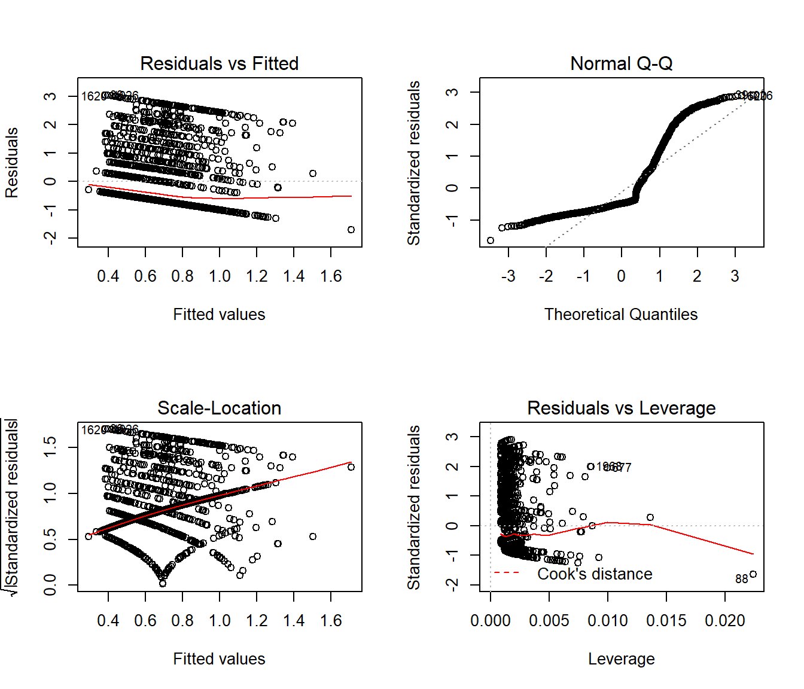
19.6.6 Predictions for Harry and Sally
fit lwr upr
1 1.0055148 -1.05384 3.064869
2 0.4818296 -1.57647 2.540129Again, these predictions are on the log(physhealth + 1) scale, and so we have to exponentiate them, and then subtract 1, to see them on the original physhealth scale.
fit lwr upr
1 1.7333139 -0.6514033 20.43166
2 0.6190338 -0.7932965 11.68131The prediction for Harry is now 1.73 days, and for Sally is 0.62 days. The prediction intervals for each again include some values below 0, which is the smallest possible value.
19.7 A Poisson Regression Model
The physhealth data describe a count. Specifically a count of the number of days where the subject felt poorly in the last 30. Why wouldn’t we model this count with linear regression?
- A count can only be positive. Linear regression would estimate some subjects as having negative counts.
- A count is unlikely to follow a Normal distribution. In fact, it’s far more likely that the log of the counts will follow a Poisson distribution.
So, we’ll try that. The Poisson distribution is used to model a count outcome - that is, an outcome with possible values (0, 1, 2, …). The model takes a somewhat familiar form to the models we’ve used for linear and logistic regression9. If our outcome is y and our linear predictors X, then the model is:
\[ y_i \sim \mbox{Poisson}(\lambda_i) \]
The parameter \(\lambda\) must be positive, so it makes sense to fit a linear regression on the logarithm of this…
\[ \lambda_i = exp(\beta_0 + \beta_1 X_1 + ... \beta_k X_k) \]
The coefficients \(\beta\) can be exponentiated and treated as multiplicative effects.
We’ll run a generalized linear model with a log link function, ensuring that all of the predicted values will be positive, and using a Poisson error distribution. This is called Poisson regression.
Poisson regression may be appropriate when the dependent variable is a count of events. The events must be independent - the occurrence of one event must not make any other more or less likely. That’s hard to justify in our case, but we can take a look.
mod_poiss1 <- glm(physhealth ~ bmi_c + smoke100,
family = poisson(),
data = sm_oh_A_young)
summary(mod_poiss1)
Call:
glm(formula = physhealth ~ bmi_c + smoke100, family = poisson(),
data = sm_oh_A_young)
Deviance Residuals:
Min 1Q Median 3Q Max
-6.5874 -2.6043 -2.0864 -0.5326 10.6886
Coefficients:
Estimate Std. Error z value Pr(>|z|)
(Intercept) 0.90697 0.01870 48.50 <2e-16 ***
bmi_c 0.03505 0.00142 24.68 <2e-16 ***
smoke100 0.53248 0.02490 21.38 <2e-16 ***
---
Signif. codes: 0 '***' 0.001 '**' 0.01 '*' 0.05 '.' 0.1 ' ' 1
(Dispersion parameter for poisson family taken to be 1)
Null deviance: 20222 on 1973 degrees of freedom
Residual deviance: 19150 on 1971 degrees of freedom
AIC: 21645
Number of Fisher Scoring iterations: 6Waiting for profiling to be done... 2.5 % 97.5 %
(Intercept) 0.87010034 0.94340744
bmi_c 0.03225322 0.03782154
smoke100 0.48370976 0.5813364319.7.1 The Fitted Equation
The model equation is
log(physhealth) = 0.91 + 0.035 bmi_c + 0.53 smoke100It looks like both bmi and smoke_100 have confidence intervals excluding 0.
19.7.2 Interpreting the Coefficients
Our new model for \(y_i\) = counts of poor physhealth days in the last 30, follows the regression equation:
\[ y_i \sim \mbox{Poisson}(exp(0.91 + 0.035 bmi_c + 0.53 smoke100)) \]
where smoke100 is 1 if the subject has smoked 100 cigarettes (lifetime) and 0 otherwise, and bmi_c is just the centered body-mass index value in kg/m2. We interpret the coefficients as follows:
- The constant term, 0.91, gives us the intercept of the regression - the prediction if
smoke100 = 0andbmi_c = 0. In this case, because we’ve centered BMI, it implies thatexp(0.91)= 2.48 is the predicted days of poorphyshealthfor a non-smoker with average BMI. - The coefficient of
bmi_c, 0.035, is the expected difference in count of poorphyshealthdays (on the log scale) for each additional kg/m2 of body mass index. The expected multiplicative increase is \(e^{0.035}\) = 1.036, corresponding to a 3.6% difference in the count. - The coefficient of
smoke100, 0.53, tells us that the predictive difference between those who have and who have not smoked 100 cigarettes can be found by multiplying thephyshealthcount byexp(0.53)= 1.7, yielding a 70% increase of thephyshealthcount.
As with linear or logistic regression, each coefficient is interpreted as a comparison where one predictor changes by one unit, while the others remain constant.
19.7.3 Testing the Predictors
We can use the Wald tests (z tests) provided with the Poisson regression output, or we can fit the model and then run an ANOVA to obtain a test based on the deviance (a simple transformation of the log likelihood ratio.)
- By the Wald tests shown above, each predictor clearly adds significant predictive value to the model given the other predictor, and we note that the p values are as small as R will support.
- The ANOVA approach for this model lets us check the impact of adding
smoke100to a model already containingbmi_c.
Analysis of Deviance Table
Model: poisson, link: log
Response: physhealth
Terms added sequentially (first to last)
Df Deviance Resid. Df Resid. Dev Pr(>Chi)
NULL 1973 20222
bmi_c 1 610.05 1972 19612 < 2.2e-16 ***
smoke100 1 461.41 1971 19150 < 2.2e-16 ***
---
Signif. codes: 0 '***' 0.001 '**' 0.01 '*' 0.05 '.' 0.1 ' ' 1To obtain a p value for smoke100’s impact after bmi_c is accounted for, we compare the difference in deviance to a chi-square distribution with 1 degree of freedom. To check the effect of bmi_c, we could refit the model with bmi_c entering last, and again run an ANOVA.
We could also run a likelihood-ratio test for each predictor, by fitting the model with and without that predictor.
mod_poiss1_without_bmi <- glm(physhealth ~ smoke100,
family = poisson(),
data = sm_oh_A_young)
anova(mod_poiss1, mod_poiss1_without_bmi, test = "Chisq")Analysis of Deviance Table
Model 1: physhealth ~ bmi_c + smoke100
Model 2: physhealth ~ smoke100
Resid. Df Resid. Dev Df Deviance Pr(>Chi)
1 1971 19150
2 1972 19692 -1 -541.51 < 2.2e-16 ***
---
Signif. codes: 0 '***' 0.001 '**' 0.01 '*' 0.05 '.' 0.1 ' ' 119.7.4 Correcting for Overdispersion with coeftest/coefci
The main assumption we’ll think about in a Poisson model is about overdispersion. We might deal with the overdispersion we see in this model by changing the nature of the tests we run within this model, using the coeftest or coefci approaches from the lmtest package, as I’ll demonstrate next, or we might refit the model using a quasi-likelihood approach, as I’ll show in the material to come.
Here, we’ll use the coeftest and coefci approach from lmtest combined with robust sandwich estimation (via the sandwich package) to re-compute the Wald tests.
z test of coefficients:
Estimate Std. Error z value Pr(>|z|)
(Intercept) 0.9069750 0.0717170 12.6466 < 2.2e-16 ***
bmi_c 0.0350513 0.0061144 5.7326 9.889e-09 ***
smoke100 0.5324765 0.1004346 5.3017 1.147e-07 ***
---
Signif. codes: 0 '***' 0.001 '**' 0.01 '*' 0.05 '.' 0.1 ' ' 1 2.5 % 97.5 %
(Intercept) 0.76641223 1.04753778
bmi_c 0.02306738 0.04703519
smoke100 0.33562837 0.72932470Both predictors are still significant, but the standard errors are more appropriate. Later, we’ll fit this approach by changing the estimation method to a quasi-likelihood approach.
19.7.5 Store fitted values and residuals
What happens if we try using the broom package in this case? We can, if we like, get our residuals and predicted values right on the scale of our physhealth response.
sm_poiss1 <- augment(mod_poiss1, sm_oh_A_young,
type.predict = "response",
type.residuals = "response")
sm_poiss1 %>%
select(physhealth, .fitted, .resid) %>%
head()# A tibble: 6 x 3
physhealth .fitted .resid
<dbl> <dbl> <dbl>
1 0 2.23 -2.23
2 0 2.29 -2.29
3 0 3.10 -3.10
4 30 5.32 24.7
5 0 3.15 -3.15
6 0 3.71 -3.7119.7.6 Rootogram: see the fit of a count regression model
A rootogram is a very useful way to visualize the fit of a count regression model10. The rootogram function in the countreg package makes this pretty straightforward. By default, this fits a hanging rootogram on the square root of the frequencies.
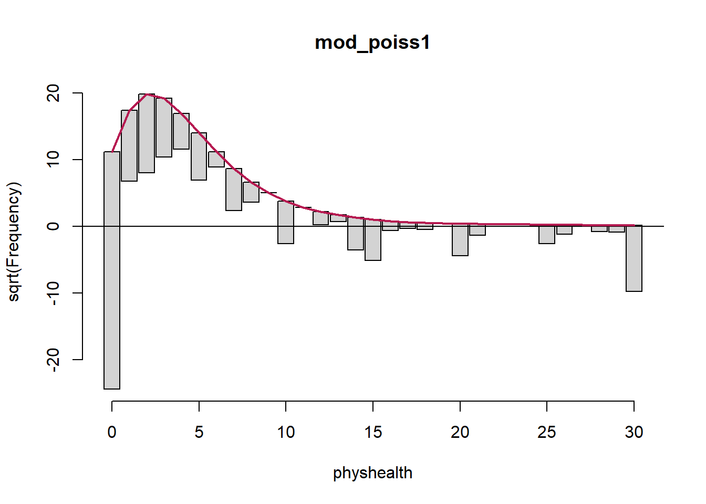
The red curved line is the theoretical Poisson fit. “Hanging” from each point on the red line is a bar, the height of which represents the difference between expected and observed counts. A bar hanging below 0 indicates underfitting. A bar hanging above 0 indicates overfitting. The counts have been transformed with a square root transformation to prevent smaller counts from getting obscured and overwhelmed by larger counts. We see a great deal of underfitting for counts of 0, and overfitting for most other counts, especially 1-6, with some underfitting again by physhealth above 14 days.
19.7.7 Specify the R2 and log(likelihood) values
We can calculate the R2 as the squared correlation of the fitted values and the observed values.
# The correlation of observed and fitted values
(poiss_r <- with(sm_poiss1, cor(physhealth, .fitted)))[1] 0.1848272[1] 0.03416108The glance function in the broom package gives us model log(likelihood), among other summaries.
# A tibble: 1 x 7
null.deviance df.null logLik AIC BIC deviance df.residual
<dbl> <dbl> <dbl> <dbl> <dbl> <dbl> <dbl>
1 20222. 1973 -10819. 21645. 21661. 19150. 1971Here, we have
| Model | Scale | R2 | log(likelihood) |
|---|---|---|---|
| Poisson | log(physhealth) |
0.185 | -10189.33 |
19.7.8 Check model assumptions
The Poisson model is a classical generalized linear model, estimated using the method of maximum likelihood. While the default plot option for a glm still shows the plots we would use to assess the assumptions of an OLS model, we don’t actually get much from that, since our Poisson model has different assumptions. It can be useful to look at a plot of residuals vs. fitted values on the original physhealth scale.
19.7.9 Using glm.diag.plots from the boot package
The glm.diag.plots function from the boot package makes a series of diagnostic plots for generalized linear models.
- (Top, Left) Jackknife deviance residuals against fitted values. This is essentially identical to what you obtain with
plot(mod_poiss1, which = 1). A jackknife deviance residual is also called a likelihood residual. It is the change in deviance when this observation is omitted from the data. - (Top, Right) Normal Q-Q plot of standardized deviance residuals. (Dotted line shows expectation if those standardized residuals followed a Normal distribution, and these residuals generally should.) The result is similar to what you obtain with
plot(mod_poiss1, which = 2). - (Bottom, Left) Cook statistic vs. standardized leverage
- n = # of observations, p = # of parameters estimated
- Horizontal dotted line is at \(\frac{8}{n - 2p}\). Points above the line have high influence on the model.
- Vertical line is at \(\frac{2p}{n - 2p}\). Points to the right of the line have high leverage.
- (Bottom, Right) Index plot of Cook’s statistic to help identify the observations with high influence. This is essentially the same plot as
plot(mod_poiss1, which = 4)
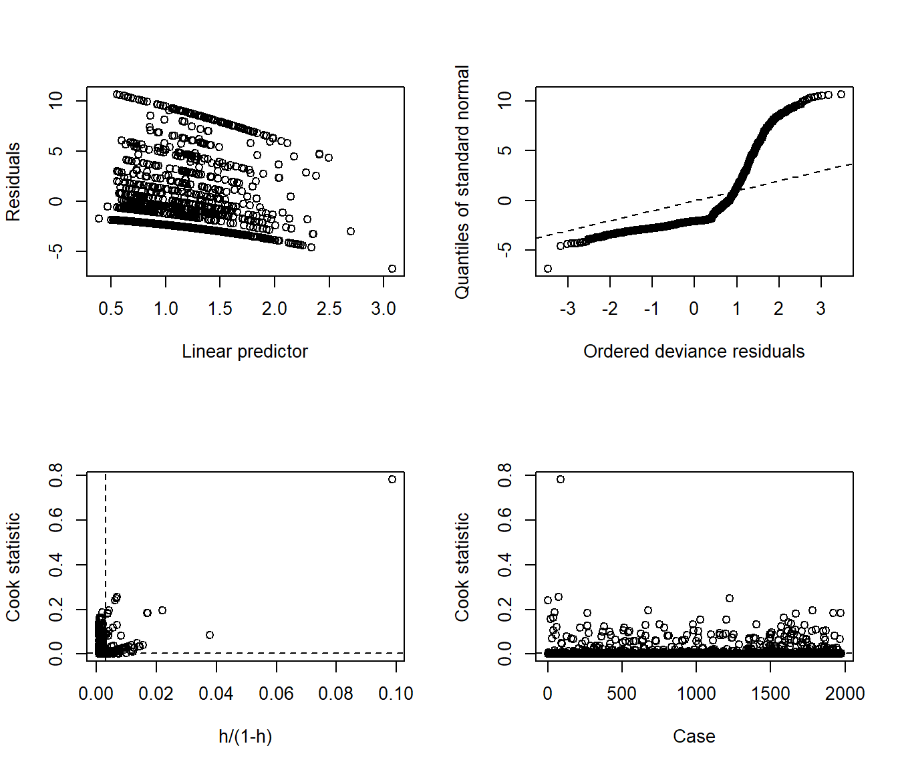
When working with these plots, it is possible to use the iden command to perform some interactive identification of points in your R terminal. But that doesn’t play out effectively in an HTML summary document like this, so we’ll leave that out.
19.7.10 Predictions for Harry and Sally
The predictions from a glm fit like this don’t include prediction intervals. But we can get predictions on the scale of our original response variable, physhealth, like this.
$fit
1 2
5.989239 2.078650
$se.fit
1 2
0.11540925 0.04313861
$residual.scale
[1] 1By using response as the type, these predictions fall on the original physhealth scale. The prediction for Harry is now 5.99 days, and for Sally is 2.08 days.
19.8 Overdispersion in a Poisson Model
Poisson regressions do not supply an independent variance parameter \(\sigma\), and as a result can be overdispersed, and usually are. Under the Poisson distribution, the variance equals the mean - so the standard deviation equals the square root of the mean. The notion of overdispersion arises here. When fitting generalized linear models with Poisson error distributions, the residual deviance and its degrees of freedom should be approximately equal if the model fits well.
If the residual deviance is far greater than the degrees of freedom, then overdispersion may well be a problem. In this case, the residual deviance is about 8.5 times the size of the residual degrees of freedom, so that’s a clear indication of overdispersion. We saw earlier that the Poisson regression model requires that the outcome (here the physhealth counts) be independent. A possible reason for the overdispersion we see here is that physhealth on different days likely do not occur independently of one another but likely “cluster” together.
19.8.1 Testing for Overdispersion?
Gelman and Hill provide an overdispersion test in R for a Poisson model as follows…
glm(formula = physhealth ~ bmi_c + smoke100, family = poisson(),
data = sm_oh_A_young)
coef.est coef.se
(Intercept) 0.91 0.02
bmi_c 0.04 0.00
smoke100 0.53 0.02
---
n = 1974, k = 3
residual deviance = 19150.4, null deviance = 20221.8 (difference = 1071.5)glm(formula = physhealth ~ bmi_c + smoke100, family = poisson(),
data = sm_oh_A_young)
coef.est coef.se
(Intercept) 0.91 0.02
bmi_c 0.04 0.00
smoke100 0.53 0.02
---
n = 1974, k = 3
residual deviance = 19150.4, null deviance = 20221.8 (difference = 1071.5)z <- (sm_oh_A_young$physhealth - yhat) / sqrt(yhat)
cat("overdispersion ratio is ", sum(z^2)/ (n - k), "\n")overdispersion ratio is 15.58183 p value of overdispersion test is 0 The p value here is 0, indicating that the probability is essentially zero that a random variable from a \(\chi^2\) distribution with (n - k) = 1971 degrees of freedom would be as large as what we observed in this case. So there is significant overdispersion.
In summary, the physhealth counts are overdispersed by a factor of 15.581, which is enormous (even a factor of 2 would be considered large) and also highly statistically significant. The basic correction for overdisperson is to multiply all regression standard errors by \(\sqrt{15.581}\) = 3.95.
The quasipoisson model and the negative binomial model that we’ll fit below are very similar. We write the overdispersed “quasiPoisson” model as:
\[ y_i \sim \mbox{overdispersed Poisson} (\mu_i exp(X_i \beta), \omega) \]
where \(\omega\) is the overdispersion parameter, 15.581, in our case. The Poisson model we saw previously is then just the overdispersed Poisson model with \(\omega = 1\).
19.9 Fitting the Quasi-Poisson Model
To deal with overdispersion, one useful approach is to apply a quasi-likelihood estimation procedure, as follows:
mod_poiss_od1 <- glm(physhealth ~ bmi_c + smoke100,
family = quasipoisson(),
data = sm_oh_A_young)
summary(mod_poiss_od1)
Call:
glm(formula = physhealth ~ bmi_c + smoke100, family = quasipoisson(),
data = sm_oh_A_young)
Deviance Residuals:
Min 1Q Median 3Q Max
-6.5874 -2.6043 -2.0864 -0.5326 10.6886
Coefficients:
Estimate Std. Error t value Pr(>|t|)
(Intercept) 0.906975 0.073816 12.287 < 2e-16 ***
bmi_c 0.035051 0.005607 6.251 4.99e-10 ***
smoke100 0.532477 0.098306 5.417 6.82e-08 ***
---
Signif. codes: 0 '***' 0.001 '**' 0.01 '*' 0.05 '.' 0.1 ' ' 1
(Dispersion parameter for quasipoisson family taken to be 15.58358)
Null deviance: 20222 on 1973 degrees of freedom
Residual deviance: 19150 on 1971 degrees of freedom
AIC: NA
Number of Fisher Scoring iterations: 6Waiting for profiling to be done... 2.5 % 97.5 %
(Intercept) 0.75875953 1.04829834
bmi_c 0.02384242 0.04582693
smoke100 0.34036857 0.72603683This “quasi-Poisson regression” model uses the same mean function as Poisson regression, but now estimated by quasi-maximum likelihood estimation or, equivalently, through the method of generalized estimating equations, where the inference is adjusted by an estimated dispersion parameter. Sometimes, though I won’t demonstrate this here, people fit an “adjusted” Poisson regression model, where this estimation by quasi-ML is augmented to adjust the inference via sandwich estimates of the covariances11.
19.9.1 The Fitted Equation
The model equation is still log(physhealth) = 0.91 + 0.035 bmi_c + 0.53 smoke100. The estimated coefficients are still statistically significant, but the standard errors for each coefficient are considerably larger when we account for overdispersion.
The dispersion parameter for the quasi-Poisson family is now taken to be a bit less than the square root of the ratio of the residual deviance and its degrees of freedom. This is a much more believable model, as a result.
19.9.2 Interpreting the Coefficients
No meaningful change from the Poisson model we saw previously.
19.9.3 Testing the Predictors
Again, we can use the Wald tests (z tests) provided with the Poisson regression output, or we can fit the model and then run an ANOVA to obtain a test based on the deviance (a simple transformation of the log likelihood ratio.)
- By the Wald tests shown above, each predictor clearly adds significant predictive value to the model given the other predictor, and we note that the p values are as small as R will support.
- The ANOVA approach for this model lets us check the impact of adding
smoke100to a model already containingbmi_c.
Analysis of Deviance Table
Model: quasipoisson, link: log
Response: physhealth
Terms added sequentially (first to last)
Df Deviance Resid. Df Resid. Dev Pr(>Chi)
NULL 1973 20222
bmi_c 1 610.05 1972 19612 3.931e-10 ***
smoke100 1 461.41 1971 19150 5.287e-08 ***
---
Signif. codes: 0 '***' 0.001 '**' 0.01 '*' 0.05 '.' 0.1 ' ' 1The result is unchanged. To obtain a p value for smoke100’s impact after bmi_c is accounted for, we compare the difference in deviance to a chi-square distribution with 1 degree of freedom. The result is incredibly statistically significant.
To check the effect of bmi_c, we could refit the model with and without bmi_c, and again run an ANOVA. I’ll skip that here.
19.9.4 Store fitted values and residuals
What happens if we try using the broom package in this case? We can, if we like, get our residuals and predicted values right on the scale of our physhealth response.
sm_poiss_od1 <- augment(mod_poiss_od1, sm_oh_A_young,
type.predict = "response",
type.residuals = "response")
sm_poiss_od1 %>%
select(physhealth, .fitted, .resid) %>%
head()# A tibble: 6 x 3
physhealth .fitted .resid
<dbl> <dbl> <dbl>
1 0 2.23 -2.23
2 0 2.29 -2.29
3 0 3.10 -3.10
4 30 5.32 24.7
5 0 3.15 -3.15
6 0 3.71 -3.71It turns out that 0 of the 1974 predictions that we make are below 0, and the largest prediction made by this model is 21.7 days.
The rootogram function we’ve shown doesn’t support overdispersed Poisson models at the moment.
19.9.5 Specify the R2 and log(likelihood) values
We can calculate the R2 as the squared correlation of the fitted values and the observed values.
# The correlation of observed and fitted values
(poiss_od_r <- with(sm_poiss_od1, cor(physhealth, .fitted)))[1] 0.1848272[1] 0.03416108The glance function in the broom package gives us model log(likelihood), among other summaries.
# A tibble: 1 x 7
null.deviance df.null logLik AIC BIC deviance df.residual
<dbl> <dbl> <dbl> <dbl> <dbl> <dbl> <dbl>
1 20222. 1973 NA NA NA 19150. 1971Here, we have
| Model | Scale | R2 | log(likelihood) |
|---|---|---|---|
| Poisson | log(physhealth) |
0.034 | NA |
19.9.6 Check model assumptions
Having dealt with the overdispersion, this should be a cleaner model in some ways, but the diagnostics (other than the dispersion) will be the same. Here is a plot of residuals vs. fitted values on the original physhealth scale.
ggplot(sm_poiss_od1, aes(x = .fitted, y = .resid)) +
geom_point() +
labs(title = "Residuals vs. Fitted `physhealth`",
subtitle = "Overdispersed Poisson Regression model")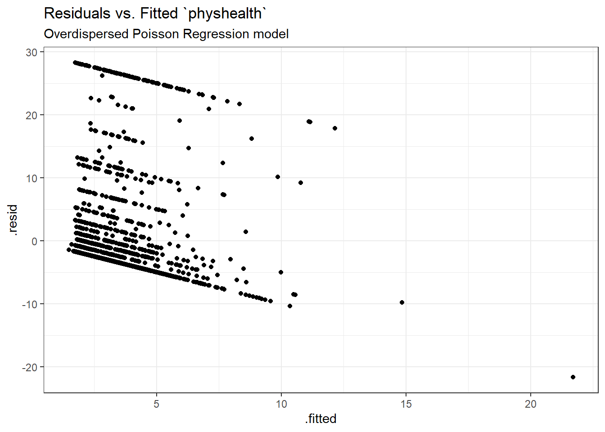
I’ll skip the glm.diag.plots results, since you’ve already seen them.
19.9.7 Predictions for Harry and Sally
The predictions from this overdispersed Poisson regression will match those in the original Poisson regression, but the standard error will be larger.
$fit
1 2
5.989239 2.078650
$se.fit
1 2
0.4555900 0.1702942
$residual.scale
[1] 3.947604By using response as the type, these predictions fall on the original physhealth scale. Again, the prediction for Harry is 5.99 days, and for Sally is 2.08 days.
19.10 Poisson and Quasi-Poisson models using Glm from the rms package
The Glm function in the rms package can be used to fit both the original Poisson regression and the quasi-Poisson model accounting for overdispersion.
19.10.1 Refitting the original Poisson regression with Glm
d <- datadist(sm_oh_A_young)
options(datadist = "d")
mod_poi_Glm_1 <- Glm(physhealth ~ bmi_c + smoke100,
family = poisson(),
data = sm_oh_A_young,
x = T, y = T)
mod_poi_Glm_1General Linear Model
Glm(formula = physhealth ~ bmi_c + smoke100, family = poisson(),
data = sm_oh_A_young, x = T, y = T)
Model Likelihood
Ratio Test
Obs 1974 LR chi2 1071.46
Residual d.f.1971 d.f. 2
g 0.418254 Pr(> chi2) <0.0001
Coef S.E. Wald Z Pr(>|Z|)
Intercept 0.9070 0.0187 48.50 <0.0001
bmi_c 0.0351 0.0014 24.68 <0.0001
smoke100 0.5325 0.0249 21.38 <0.0001
19.10.2 Refitting the overdispersed Poisson regression with Glm
d <- datadist(sm_oh_A_young)
options(datadist = "d")
mod_poi_od_Glm_1 <- Glm(physhealth ~ bmi_c + smoke100,
family = quasipoisson(),
data = sm_oh_A_young,
x = T, y = T)
mod_poi_od_Glm_1General Linear Model
Glm(formula = physhealth ~ bmi_c + smoke100, family = quasipoisson(),
data = sm_oh_A_young, x = T, y = T)
Model Likelihood
Ratio Test
Obs 1974 LR chi2 1071.46
Residual d.f.1971 d.f. 2
g 0.418254 Pr(> chi2) <0.0001
Coef S.E. Wald Z Pr(>|Z|)
Intercept 0.9070 0.0738 12.29 <0.0001
bmi_c 0.0351 0.0056 6.25 <0.0001
smoke100 0.5325 0.0983 5.42 <0.0001
The big advantage here is that we have access to the usual ANOVA, summary, and nomogram features that rms brings to fitting models.
19.10.3 ANOVA on a Glm fit
Wald Statistics Response: physhealth
Factor Chi-Square d.f. P
bmi_c 39.07 1 <.0001
smoke100 29.34 1 <.0001
TOTAL 74.44 2 <.0001This shows the individual Wald \(\chi^2\) tests without having to refit the model.
19.10.5 Summary of a Glm fit
Effects Response : physhealth
Factor Low High Diff. Effect S.E. Lower 0.95 Upper 0.95
bmi_c -5.0568 3.6432 8.7 0.30495 0.048785 0.20927 0.40062
smoke100 0.0000 1.0000 1.0 0.53248 0.098306 0.33968 0.72527 19.10.7 Nomogram of a Glm fit
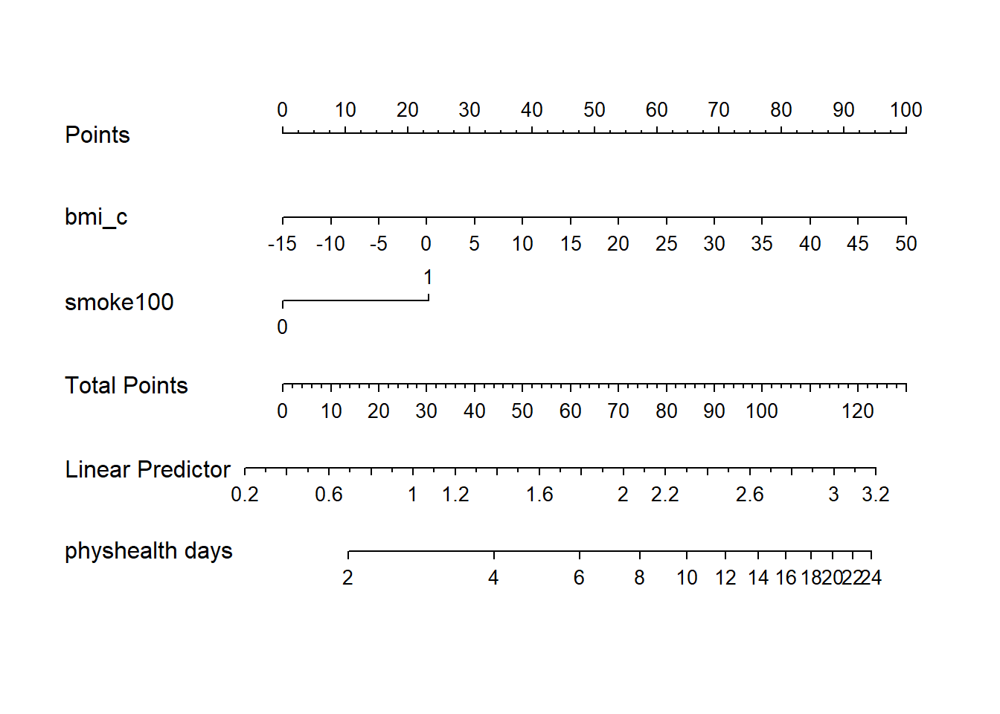
Note the use of fun=exp in both the ggplot of Predict and the nomogram. What’s that doing?
19.11 Negative Binomial Model
Another approach to dealing with overdispersion is to fit a negative binomial model12 to predict the log(physhealth) counts. This involves the fitting of an additional parameter, \(\theta\). That’s our dispersion parameter13
Sometimes, people will fit a model where \(\theta\) is known, for instance a geometric model (where \(\theta\) = 1), and then this can be directly plugged into a glm() fit, but the more common scenario is that we are going to iteratively estimate the \(\beta\) coefficients and \(\theta\). To do this, I’ll use the glm.nb function from the MASS package.
mod_nb1 <- MASS::glm.nb(physhealth ~ bmi_c + smoke100, link = log,
data = sm_oh_A_young)
summary(mod_nb1)
Call:
MASS::glm.nb(formula = physhealth ~ bmi_c + smoke100, data = sm_oh_A_young,
link = log, init.theta = 0.1487695987)
Deviance Residuals:
Min 1Q Median 3Q Max
-1.2259 -0.9712 -0.8985 -0.1127 1.9932
Coefficients:
Estimate Std. Error z value Pr(>|z|)
(Intercept) 0.874432 0.078994 11.070 < 2e-16 ***
bmi_c 0.035701 0.008314 4.294 1.76e-05 ***
smoke100 0.596568 0.121165 4.924 8.50e-07 ***
---
Signif. codes: 0 '***' 0.001 '**' 0.01 '*' 0.05 '.' 0.1 ' ' 1
(Dispersion parameter for Negative Binomial(0.1488) family taken to be 1)
Null deviance: 1468.1 on 1973 degrees of freedom
Residual deviance: 1422.6 on 1971 degrees of freedom
AIC: 6976.5
Number of Fisher Scoring iterations: 1
Theta: 0.14877
Std. Err.: 0.00705
2 x log-likelihood: -6968.53900 Waiting for profiling to be done... 2.5 % 97.5 %
(Intercept) 0.72294948 1.03294966
bmi_c 0.02072365 0.05122979
smoke100 0.35994393 0.8360228019.11.1 The Fitted Equation
The form of the model equation for a negative binomial regression is the same as that for Poisson regression.
log(physhealth) = 0.87 + 0.036 bmi_c + 0.60 smoke10019.11.2 Comparison with the (raw) Poisson model
To compare the negative binomial model to the Poisson model (without the overdispersion) we can use the logLik function to make a comparison. Note that the Poisson model is a subset of the negative binomial.
'log Lik.' -3484.269 (df=4)'log Lik.' -10819.33 (df=3)'log Lik.' 14670.13 (df=4)'log Lik.' 0 (df=4)Here, the difference in the log likelihoods is large enough that the resulting p value is very small. This strongly suggests that the negative binomial model, which adds the dispersion parameter, is more appropriate than the raw Poisson model.
However, both the regression coefficients and the standard errors are rather similar to the quasi-Poisson and the sandwich-adjusted Poisson results above. Thus, in terms of predicted means, all three models give very similar results; the associated Wald tests also lead to the same conclusions.
19.11.3 Interpreting the Coefficients
There’s only a small change here from the Poisson models we saw previously.
- The constant term, 0.87, gives us the intercept of the regression - the prediction if
smoke100 = 0andbmi_c = 0. In this case, because we’ve centered BMI, it implies thatexp(0.87)= 2.39 is the predicted days of poorphyshealthfor a non-smoker with average BMI. - The coefficient of
bmi_c, 0.036, is the expected difference in count of poorphyshealthdays (on the log scale) for each additional kg/m2 of body mass index. The expected multiplicative increase is \(e^{0.036}\) = 1.037, corresponding to a 3.7% difference in the count. - The coefficient of
smoke100, 0.60, tells us that the predictive difference between those who have and who have not smoked 100 cigarettes can be found by multiplying thephyshealthcount by exp(0.6) = 1.82, yielding essentially an 82% increase of thephyshealthcount.
19.11.4 Interpretation of Coefficients in terms of IRRs
We might be interested in looking at incident rate ratios rather than coefficients. The coefficients have an additive effect in the log(y) scale, and the IRR have a multiplicative effect in the y scale. To do this, we can exponentiate our model coefficients. This also applies to the confidence intervals.
(Intercept) bmi_c smoke100
2.397514 1.036346 1.815875 Waiting for profiling to be done... 2.5 % 97.5 %
(Intercept) 2.060502 2.809340
bmi_c 1.020940 1.052565
smoke100 1.433249 2.307173As an example, then, the incident rate for smoke100 = 1 is 1.82 times the incident rate of physhealth days for the reference group (smoke100 = 0). The percent change in the incident rate of physhealth is a 3.6% increase for every kg/m2 increase in centered bmi.
19.11.5 Testing the Predictors
Again, we can use the Wald tests (z tests) provided with the negative binomial regression output.
As an alternative, we probably should not use the standard anova process, because the models there don’t re-estimate \(\theta\) for each new model, as the warning message below indicates.
Warning in anova.negbin(mod_nb1): tests made without re-estimating 'theta'Analysis of Deviance Table
Model: Negative Binomial(0.1488), link: log
Response: physhealth
Terms added sequentially (first to last)
Df Deviance Resid. Df Resid. Dev Pr(>Chi)
NULL 1973 1468.1
bmi_c 1 20.839 1972 1447.2 4.996e-06 ***
smoke100 1 24.597 1971 1422.6 7.066e-07 ***
---
Signif. codes: 0 '***' 0.001 '**' 0.01 '*' 0.05 '.' 0.1 ' ' 1So, instead, if we want, for instance to assess the significance of bmi_c, after smoke100 is already included in the model, we fit both models (with and without bmi_c) and then compare those models with a likelihood ratio test.
mod_nb1_without_bmi <- MASS::glm.nb(physhealth ~ smoke100,
link = log,
data = sm_oh_A_young)
anova(mod_nb1, mod_nb1_without_bmi)Likelihood ratio tests of Negative Binomial Models
Response: physhealth
Model theta Resid. df 2 x log-lik. Test df LR stat.
1 smoke100 0.1452219 1972 -6991.195
2 bmi_c + smoke100 0.1487696 1971 -6968.539 1 vs 2 1 22.65661
Pr(Chi)
1
2 1.936932e-06And we could compare the negative binomial models with and without smoke100 in a similar way.
mod_nb1_without_smoke <- MASS::glm.nb(physhealth ~ bmi_c,
link = log,
data = sm_oh_A_young)
anova(mod_nb1, mod_nb1_without_smoke)Likelihood ratio tests of Negative Binomial Models
Response: physhealth
Model theta Resid. df 2 x log-lik. Test df LR stat.
1 bmi_c 0.1449969 1972 -6992.837
2 bmi_c + smoke100 0.1487696 1971 -6968.539 1 vs 2 1 24.29882
Pr(Chi)
1
2 8.248966e-0719.11.6 Store fitted values and residuals
The broom package works in this case, too. We’ll look here at residuals and predicted (fitted) values on the scale of our physhealth response.
sm_nb1 <- augment(mod_nb1, sm_oh_A_young,
type.predict = "response",
type.residuals = "response")
sm_nb1 %>%
select(physhealth, .fitted, .resid) %>%
head()# A tibble: 6 x 3
physhealth .fitted .resid
<dbl> <dbl> <dbl>
1 0 2.15 -2.15
2 0 2.22 -2.22
3 0 3.18 -3.18
4 30 5.22 24.8
5 0 3.24 -3.24
6 0 3.82 -3.8219.11.7 Rootogram for Negative Binomial model
Here’s the rootogram for the negative binomial model.
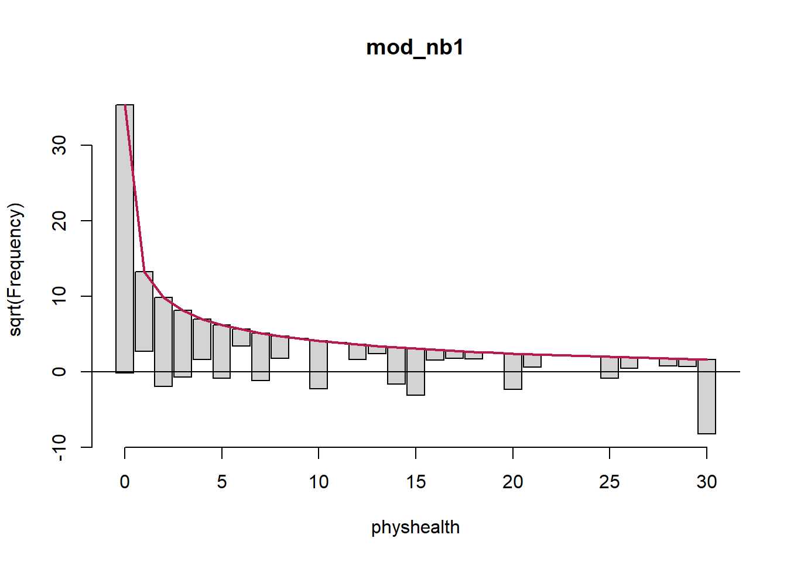
Again, the red curved line is the theoretical (negative binomial) fit. “Hanging” from each point on the red line is a bar, the height of which represents the difference between expected and observed counts. A bar hanging below 0 indicates underfitting. A bar hanging above 0 indicates overfitting. The counts have been transformed with a square root transformation to prevent smaller counts from getting obscured and overwhelmed by larger counts.
The match looks much better than the Poisson model, which is a sign that accounting for overdispersion is very important. Even this model badly underfits the number of 30 values, however.
19.11.8 Simulating what the Negative Binomial model predicts
We can use the parameters of the negative binomial model to simulate data14 and compare the simulated results to our observed physhealth data.
par(mfrow=c(1,2))
sm_oh_A_young$physhealth %>%
table() %>% barplot(main = "Observed physhealth")
set.seed(432122)
rnbinom(n = nrow(sm_oh_A_young),
size = mod_nb1$theta,
mu = exp(coef(mod_nb1)[1])) %>%
table() %>% barplot(main = "Simulated physhealth")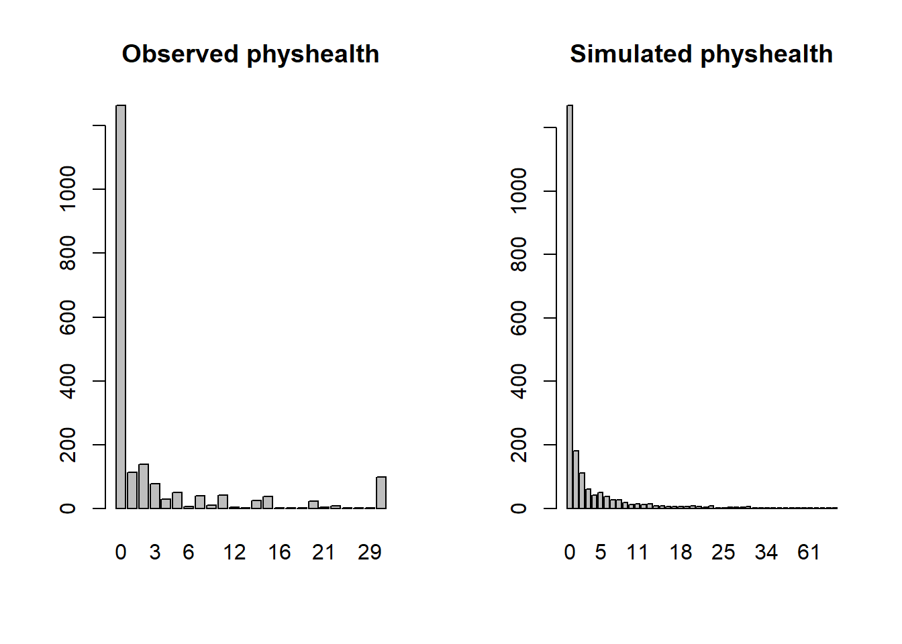
Again we see that the simulated data badly underfits the 30 values, and includes some predictions larger than 30.
19.11.9 Specify the R2 and log(likelihood) values
We can calculate the R2 as the squared correlation of the fitted values and the observed values.
[1] 0.1838199[1] 0.03378974The glance function in the broom package gives us model log(likelihood), among other summaries.
# A tibble: 1 x 7
null.deviance df.null logLik AIC BIC deviance df.residual
<dbl> <dbl> <dbl> <dbl> <dbl> <dbl> <dbl>
1 1468. 1973 -3484. 6977. 6999. 1423. 1971Here, we have
| Model | Scale | R2 | log(likelihood) |
|---|---|---|---|
| Negative Binomial | log(physhealth) |
.034 | -3484.27 |
19.11.10 Check model assumptions
Here is a plot of residuals vs. fitted values on the original physhealth scale.
ggplot(sm_nb1, aes(x = .fitted, y = .resid)) +
geom_point() +
labs(title = "Residuals vs. Fitted `physhealth`",
subtitle = "Negative Binomial Regression model")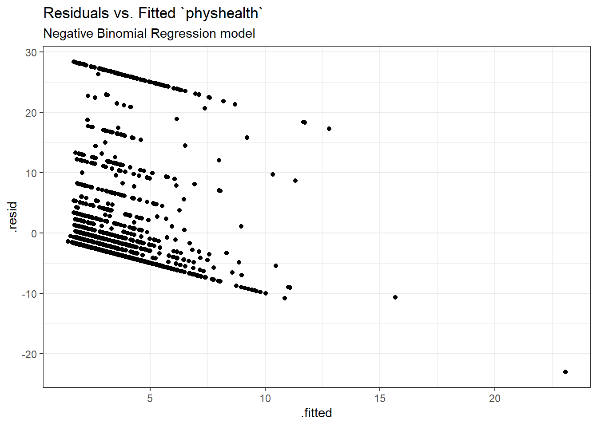
Here are the glm diagnostic plots from the boot package.
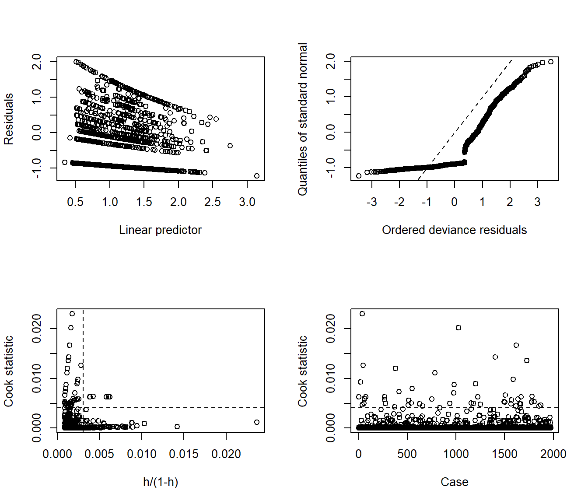
From the lower left plot, we see fewer points with large values of both Cook’s distance and leverage, so that’s a step in the right direction. The upper right plot still has some issues, but we’re closer to a desirable result there, too.
19.11.11 Predictions for Harry and Sally
The predictions from this negative binomial regression model will be only a little different than those from the Poisson models.
$fit
1 2
6.221472 2.005572
$se.fit
1 2
0.7536093 0.1773389
$residual.scale
[1] 1As we’ve seen in the past, when we use response as the type, the predictions fall on the original physhealth scale. The prediction for Harry is 6.2 days, and for Sally is 2.0 days.
19.12 The Problem: Too Few Zeros
Remember that we observe more than 1000 zeros in our physhealth data.
# A tibble: 2 x 2
`physhealth == 0` n
<lgl> <int>
1 FALSE 710
2 TRUE 1264Let’s go back to our Poisson model (without overdispersion) for a moment, and concentrate on the zero values.
# predict expected mean physhealth for each subject
mu <- predict(mod_poiss1, type = "response")
# sum the probabilities of a zero count for each mean
exp <- sum(dpois(x = 0, lambda = mu))
# predicted number of zeros from Poisson model
round(exp)[1] 124As we’ve seen previously, we’re severely underfitting zero counts. We can compare the observed number of zero physhealth results to the expected number of zero values from the likelihood-based models.
round(c("Obs" = sum(sm_oh_A_young$physhealth == 0),
"Poisson" = sum(dpois(0, fitted(mod_poiss1))),
"NB" = sum(dnbinom(0, mu = fitted(mod_nb1), size = mod_nb1$theta))),0) Obs Poisson NB
1264 124 1250 There are at least two ways to tackle this problem.
- Fitting a model which deliberately inflates the number of zeros that are fitted
- Fitting a hurdle model
We’ll look at those options, next.
19.13 The Zero-Inflated Poisson Regression Model
The zero-inflated Poisson or (ZIP) model is used to describe count data with an excess of zero counts15. The model posits that there are two processes involved:
- a logit model is used to predict excess zeros
- while a Poisson model is used to predict the counts, generally
The pscl package is used here, which can conflict with the countreg package we used to fit rootograms. That’s why I’m loading it here.
To run the zero-inflated Poisson model, we use the following:
Call:
zeroinfl(formula = physhealth ~ bmi_c + smoke100, data = sm_oh_A_young)
Pearson residuals:
Min 1Q Median 3Q Max
-1.4393 -0.6986 -0.6137 -0.1946 9.3035
Count model coefficients (poisson with log link):
Estimate Std. Error z value Pr(>|z|)
(Intercept) 1.997616 0.018797 106.28 <2e-16 ***
bmi_c 0.018155 0.001397 12.99 <2e-16 ***
smoke100 0.393349 0.024889 15.80 <2e-16 ***
Zero-inflation model coefficients (binomial with logit link):
Estimate Std. Error z value Pr(>|z|)
(Intercept) 0.682432 0.062854 10.857 <2e-16 ***
bmi_c -0.027753 0.006507 -4.265 2e-05 ***
smoke100 -0.237213 0.095318 -2.489 0.0128 *
---
Signif. codes: 0 '***' 0.001 '**' 0.01 '*' 0.05 '.' 0.1 ' ' 1
Number of iterations in BFGS optimization: 8
Log-likelihood: -5680 on 6 Df 2.5 % 97.5 %
count_(Intercept) 1.96077523 2.03445665
count_bmi_c 0.01541702 0.02089397
count_smoke100 0.34456685 0.44213126
zero_(Intercept) 0.55924062 0.80562306
zero_bmi_c -0.04050605 -0.01499934
zero_smoke100 -0.42403349 -0.05039191The output describes two separate regression models. Below the model call, we see information on a Poisson regression model. Then we see another block describing the inflation model.
Each predictor (bmi_c and smoke100) appears to be statistically significant in each part of the model.
19.13.1 Comparison to a null model
To show that this model fits better than the null model (the model with intercept only), we can compare them directly with a chi-squared test. Since we have two predictors in the full model, the degrees of freedom for this test is 2.
Call:
zeroinfl(formula = physhealth ~ 1, data = sm_oh_A_young)
Pearson residuals:
Min 1Q Median 3Q Max
-0.6934 -0.6934 -0.6934 -0.2779 5.5400
Count model coefficients (poisson with log link):
Estimate Std. Error z value Pr(>|z|)
(Intercept) 2.22764 0.01233 180.7 <2e-16 ***
Zero-inflation model coefficients (binomial with logit link):
Estimate Std. Error z value Pr(>|z|)
(Intercept) 0.5767 0.0469 12.29 <2e-16 ***
---
Signif. codes: 0 '***' 0.001 '**' 0.01 '*' 0.05 '.' 0.1 ' ' 1
Number of iterations in BFGS optimization: 2
Log-likelihood: -5908 on 2 Df'log Lik.' 8.940063e-100 (df=6)19.13.2 Comparison to a Poisson Model with the Vuong test
Vuong Non-Nested Hypothesis Test-Statistic:
(test-statistic is asymptotically distributed N(0,1) under the
null that the models are indistinguishible)
-------------------------------------------------------------
Vuong z-statistic H_A p-value
Raw 19.90791 model1 > model2 < 2.22e-16
AIC-corrected 19.89629 model1 > model2 < 2.22e-16
BIC-corrected 19.86382 model1 > model2 < 2.22e-16Certainly, the ZIP model is a significant improvement over the standard Poisson model, as the Vuong test reveals.
19.13.3 The Fitted Equation
The form of the model equation for a zero-inflated Poisson regression requires us to take two separate models into account. First we have a logistic regression model to predict the log odds of zero physhealth days. That takes care of the extra zeros. Then, to predict the number of physhealth days, we have a Poisson model, which may produce some additional zero count estimates.
19.13.4 Interpreting the Coefficients
We can exponentiate the logistic regression coefficients to obtain results in terms of odds ratios for that model, and that can be of some help in understanding the process behind excess zeros.
Also, exponentiating the coefficients of the count model help us describe those counts on the original scale of physhealth.
count_(Intercept) count_bmi_c count_smoke100 zero_(Intercept)
7.3714611 1.0183213 1.4819356 1.9786837
zero_bmi_c zero_smoke100
0.9726289 0.7888235 For example,
- in the model for
physhealth= 0, the odds ofphyshealth= 0 are 79% as high for subjects withsmoke100= 1 as for non-smokers with the same BMI. - in the Poisson model for
physhealth, thephyshealthcount is estimated to increase by 1.48 for smokers as compared to non-smokers with the same BMI.
19.13.5 Testing the Predictors
We can test the model with and without bmi_c, for example, by fitting the model both ways, and comparing the results with either a Wald or Likelihood Ratio test, each of which is available in the lmtest package.
mod_zip1_nobmi <- zeroinfl(physhealth ~ smoke100,
data = sm_oh_A_young)
lmtest::waldtest(mod_zip1, mod_zip1_nobmi)Wald test
Model 1: physhealth ~ bmi_c + smoke100
Model 2: physhealth ~ smoke100
Res.Df Df Chisq Pr(>Chisq)
1 1968
2 1970 -2 187.13 < 2.2e-16 ***
---
Signif. codes: 0 '***' 0.001 '**' 0.01 '*' 0.05 '.' 0.1 ' ' 1Likelihood ratio test
Model 1: physhealth ~ bmi_c + smoke100
Model 2: physhealth ~ smoke100
#Df LogLik Df Chisq Pr(>Chisq)
1 6 -5679.8
2 4 -5769.5 -2 179.27 < 2.2e-16 ***
---
Signif. codes: 0 '***' 0.001 '**' 0.01 '*' 0.05 '.' 0.1 ' ' 119.13.6 Store fitted values and residuals
The broom package does not work with the zeroinfl tool. So we need to build up the fitted values and residuals ourselves.
sm_zip1 <- sm_oh_A_young %>%
mutate(fitted = fitted(mod_zip1, type = "response"),
resid = resid(mod_zip1, type = "response"))
sm_zip1 %>%
dplyr::select(physhealth, fitted, resid) %>%
head()# A tibble: 6 x 3
physhealth fitted resid
<dbl> <dbl> <dbl>
1 0 2.21 -2.21
2 0 2.28 -2.28
3 0 3.12 -3.12
4 30 5.27 24.7
5 0 3.17 -3.17
6 0 3.75 -3.7519.13.7 Modeled Number of Zero Counts
The zero-inflated model is designed to perfectly match the number of observed zeros. We can compare the observed number of zero physhealth results to the expected number of zero values from the likelihood-based models.
round(c("Obs" = sum(sm_oh_A_young$physhealth == 0),
"Poisson" = sum(dpois(0, fitted(mod_poiss1))),
"NB" = sum(dnbinom(0, mu = fitted(mod_nb1), size = mod_nb1$theta)),
"ZIP" = sum(predict(mod_zip1, type = "prob")[,1])), 0) Obs Poisson NB ZIP
1264 124 1250 1264 19.13.8 Rootogram for ZIP model
Here’s the rootogram for the zero-inflated Poisson model.
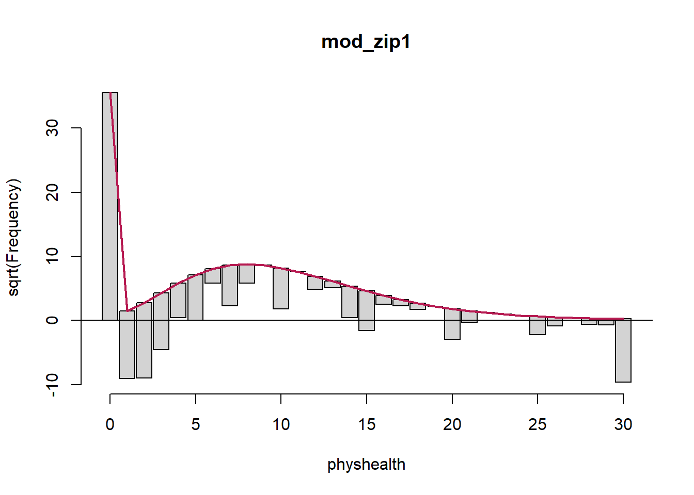
The zero frequencies are perfectly matched here, but we can see that counts of 1 and 2 are now substantially underfit, and values between 6 and 13 are overfit.
19.13.9 Specify the R2 and log (likelihood) values
We can calculate a proxy for R2 as the squared correlation of the fitted values and the observed values.
[1] 0.1874454[1] 0.0351358'log Lik.' -5679.833 (df=6)Here, we have
| Model | Scale | R2 | log(likelihood) |
|---|---|---|---|
| Zero-Inflated Poisson | Complex: log(physhealth) |
.035 | -5679.83 |
19.13.10 Check model assumptions
Here is a plot of residuals vs. fitted values on the original physhealth scale.
ggplot(sm_zip1, aes(x = fitted, y = resid)) +
geom_point() +
labs(title = "Residuals vs. Fitted `physhealth`",
subtitle = "Zero-Inflated Poisson Regression model")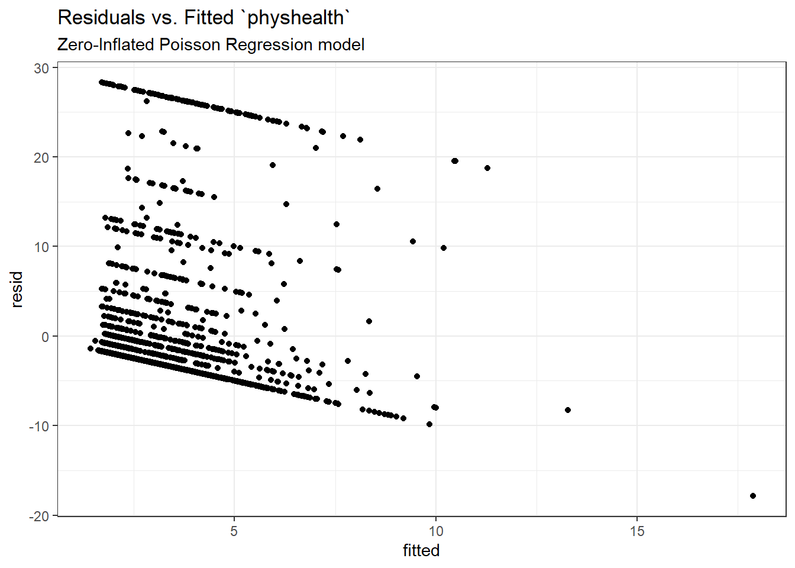
19.13.11 Predictions for Harry and Sally
The predictions from this ZIP regression model are obtained as follows…
1 2
6.001537 2.056624 As we’ve seen in the past, when we use response as the type, the predictions fall on the original physhealth scale. The prediction for Harry is 6.0 days, and for Sally is 2.1 days.
19.14 The Zero-Inflated Negative Binomial Regression Model
As an alternative to the ZIP model, we might consider a zero-inflated negative binomial regression16. This will involve a logistic regression to predict the probability of a 0, and then a negative binomial model to describe the counts of physhealth.
To run the zero-inflated negative binomial model, we use the following code:
mod_zinb1 <- zeroinfl(physhealth ~ bmi_c + smoke100,
dist = "negbin", data = sm_oh_A_young)
summary(mod_zinb1)
Call:
zeroinfl(formula = physhealth ~ bmi_c + smoke100, data = sm_oh_A_young,
dist = "negbin")
Pearson residuals:
Min 1Q Median 3Q Max
-0.5580 -0.4192 -0.3957 -0.1165 6.4367
Count model coefficients (negbin with log link):
Estimate Std. Error z value Pr(>|z|)
(Intercept) 1.545557 0.099777 15.490 < 2e-16 ***
bmi_c 0.024597 0.006636 3.707 0.00021 ***
smoke100 0.517681 0.110774 4.673 2.96e-06 ***
Log(theta) -0.873978 0.143855 -6.075 1.24e-09 ***
Zero-inflation model coefficients (binomial with logit link):
Estimate Std. Error z value Pr(>|z|)
(Intercept) -0.071610 0.164021 -0.437 0.66241
bmi_c -0.027636 0.009308 -2.969 0.00299 **
smoke100 -0.126933 0.137169 -0.925 0.35477
---
Signif. codes: 0 '***' 0.001 '**' 0.01 '*' 0.05 '.' 0.1 ' ' 1
Theta = 0.4173
Number of iterations in BFGS optimization: 14
Log-likelihood: -3469 on 7 Df 2.5 % 97.5 %
count_(Intercept) 1.34999808 1.741115716
count_bmi_c 0.01159131 0.037602779
count_smoke100 0.30056905 0.734793365
zero_(Intercept) -0.39308572 0.249866678
zero_bmi_c -0.04587967 -0.009392417
zero_smoke100 -0.39577918 0.14191407519.14.1 Comparison to a null model
To show that this model fits better than the null model (the model with intercept only), we can compare them directly with a chi-squared test. Since we have two predictors in the full model, the degrees of freedom for this test is 2.
mod_zinbnull <- zeroinfl(physhealth ~ 1, dist = "negbin",
data = sm_oh_A_young)
summary(mod_zinbnull)
Call:
zeroinfl(formula = physhealth ~ 1, data = sm_oh_A_young, dist = "negbin")
Pearson residuals:
Min 1Q Median 3Q Max
-0.4048 -0.4048 -0.4048 -0.1622 3.2340
Count model coefficients (negbin with log link):
Estimate Std. Error z value Pr(>|z|)
(Intercept) 1.7766 0.0964 18.429 < 2e-16 ***
Log(theta) -1.0445 0.1612 -6.479 9.25e-11 ***
Zero-inflation model coefficients (binomial with logit link):
Estimate Std. Error z value Pr(>|z|)
(Intercept) -0.2605 0.1920 -1.357 0.175
---
Signif. codes: 0 '***' 0.001 '**' 0.01 '*' 0.05 '.' 0.1 ' ' 1
Theta = 0.3519
Number of iterations in BFGS optimization: 12
Log-likelihood: -3498 on 3 Df'log Lik.' 8.477191e-07 (df=4)19.14.2 Comparison to a Negative Binomial Model: Vuong test
Vuong Non-Nested Hypothesis Test-Statistic:
(test-statistic is asymptotically distributed N(0,1) under the
null that the models are indistinguishible)
-------------------------------------------------------------
Vuong z-statistic H_A p-value
Raw 3.0763494 model1 > model2 0.0010478
AIC-corrected 2.4609374 model1 > model2 0.0069287
BIC-corrected 0.7415327 model1 > model2 0.2291853The zero-inflated negative binomial model is a significant improvement over the standard negative binomial model according to the the raw or AIC-corrected Vuong tests, but not according to the BIC-corrected test.
19.14.3 The Fitted Equation
Like the ZIP, the zero-inflated negative binomial regression also requires us to take two separate models into account. First we have a logistic regression model to predict the log odds of zero physhealth days. That takes care of the extra zeros. Then, to predict the number of physhealth days, we have a negative binomial regression, with a \(\theta\) term, and this negative binomial regression model may also produce some additional zero count estimates.
19.14.4 Interpreting the Coefficients
As with the zip, we can exponentiate the logistic regression coefficients to obtain results in terms of odds ratios for that model, and that can be of some help in understanding the process behind excess zeros.
count_(Intercept) count_bmi_c count_smoke100 zero_(Intercept)
4.6905831 1.0249020 1.6781319 0.9308943
zero_bmi_c zero_smoke100
0.9727423 0.8807931 For example,
- in the model for
physhealth= 0, the odds ofphyshealth= 0 are 88.1% as high for subjects withsmoke100= 1 as for non-smokers with the same BMI.
Interpreting the negative binomial piece works the same way as it did in the negative binomial regression.
19.14.5 Testing the Predictors
We can test the model with and without bmi_c, for example, by fitting the model both ways, and comparing the results with either a Wald or Likelihood Ratio test, each of which is available in the lmtest package.
mod_zinb1_nobmi <- zeroinfl(physhealth ~ smoke100,
dist = "negbin",
data = sm_oh_A_young)
lmtest::waldtest(mod_zinb1, mod_zinb1_nobmi)Wald test
Model 1: physhealth ~ bmi_c + smoke100
Model 2: physhealth ~ smoke100
Res.Df Df Chisq Pr(>Chisq)
1 1967
2 1969 -2 29.617 3.704e-07 ***
---
Signif. codes: 0 '***' 0.001 '**' 0.01 '*' 0.05 '.' 0.1 ' ' 1Likelihood ratio test
Model 1: physhealth ~ bmi_c + smoke100
Model 2: physhealth ~ smoke100
#Df LogLik Df Chisq Pr(>Chisq)
1 7 -3469.3
2 5 -3485.0 -2 31.453 1.479e-07 ***
---
Signif. codes: 0 '***' 0.001 '**' 0.01 '*' 0.05 '.' 0.1 ' ' 119.14.6 Store fitted values and residuals
Again, we need to build up the fitted values and residuals without the broom package.
sm_zinb1 <- sm_oh_A_young %>%
mutate(fitted = fitted(mod_zinb1, type = "response"),
resid = resid(mod_zinb1, type = "response"))
sm_zip1 %>%
dplyr::select(physhealth, fitted, resid) %>%
head()# A tibble: 6 x 3
physhealth fitted resid
<dbl> <dbl> <dbl>
1 0 2.21 -2.21
2 0 2.28 -2.28
3 0 3.12 -3.12
4 30 5.27 24.7
5 0 3.17 -3.17
6 0 3.75 -3.7519.14.7 Modeled Number of Zero Counts
Once again, we can compare the observed number of zero physhealth results to the expected number of zero values from the likelihood-based models.
round(c("Obs" = sum(sm_oh_A_young$physhealth == 0),
"Poisson" = sum(dpois(0, fitted(mod_poiss1))),
"NB" = sum(dnbinom(0, mu = fitted(mod_nb1), size = mod_nb1$theta)),
"ZIP" = sum(predict(mod_zip1, type = "prob")[,1]),
"ZINB" = sum(predict(mod_zinb1, type = "prob")[,1])),0) Obs Poisson NB ZIP ZINB
1264 124 1250 1264 1264 So, the Poisson model is clearly inappropriate, but the zero-inflated (Poisson and NB) and the negative binomial model all give reasonable fits in this regard.
19.14.8 Rootogram for Zero-Inflated Negative Binomial model
Here’s the rootogram for the zero-inflated negative binomial model.
As in the ZIP model, the zero frequencies are perfectly matched here, but we can see that counts of 1 and 2 are now closer to the data we observe than in the ZIP model. We are still substantially underfitting values of 30.
19.14.9 Specify the R2 and log (likelihood) values
We can calculate a proxy for R2 as the squared correlation of the fitted values and the observed values.
[1] 0.1860222[1] 0.03460424'log Lik.' -3469.273 (df=7)Here, we have
| Model | Scale | R2 | log(likelihood) |
|---|---|---|---|
| Zero-Inflated Negative Binomial | Complex: log(physhealth) |
.035 | -3469.27 |
19.14.10 Check model assumptions
Here is a plot of residuals vs. fitted values on the original physhealth scale.
19.14.11 Predictions for Harry and Sally
The predictions from this zero-inflated negative binomial regression model are obtained as follows…
1 2
6.206407 2.004882 As we’ve seen in the past, when we use response as the type, the predictions fall on the original physhealth scale. The prediction for Harry is 6.2 days, and for Sally is 2.0 days.
19.15 A “hurdle” model (with Poisson)
Much of the discussion here of hurdle models comes from Clay Ford at the University of Virginia17. Ford describes a hurdle model as follows:
The hurdle model is a two-part model that specifies one process for zero counts and another process for positive counts. The idea is that positive counts occur once a threshold is crossed, or put another way, a hurdle is cleared. If the hurdle is not cleared, then we have a count of 0.
The first part of the model is typically a binary logit model. This models whether an observation takes a positive count or not. The second part of the model is usually a truncated Poisson or Negative Binomial model. Truncated means we’re only fitting positive counts. If we were to fit a hurdle model to our [medicare] data, the interpretation would be that one process governs whether a patient visits a doctor or not, and another process governs how many visits are made.
To fit a hurdle model, we’ll use the hurdle function in the pscl package.
mod_hur1 <- hurdle(physhealth ~ bmi_c + smoke100,
dist = "poisson", zero.dist = "binomial",
data = sm_oh_A_young)
summary(mod_hur1)
Call:
hurdle(formula = physhealth ~ bmi_c + smoke100, data = sm_oh_A_young,
dist = "poisson", zero.dist = "binomial")
Pearson residuals:
Min 1Q Median 3Q Max
-1.4408 -0.6986 -0.6138 -0.1945 9.2996
Count model coefficients (truncated poisson with log link):
Estimate Std. Error z value Pr(>|z|)
(Intercept) 1.997633 0.018796 106.28 <2e-16 ***
bmi_c 0.018157 0.001397 12.99 <2e-16 ***
smoke100 0.393315 0.024889 15.80 <2e-16 ***
Zero hurdle model coefficients (binomial with logit link):
Estimate Std. Error z value Pr(>|z|)
(Intercept) -0.683512 0.062828 -10.879 < 2e-16 ***
bmi_c 0.027799 0.006506 4.273 1.93e-05 ***
smoke100 0.238285 0.095302 2.500 0.0124 *
---
Signif. codes: 0 '***' 0.001 '**' 0.01 '*' 0.05 '.' 0.1 ' ' 1
Number of iterations in BFGS optimization: 14
Log-likelihood: -5680 on 6 Df 2.5 % 97.5 %
count_(Intercept) 1.96079289 2.03447326
count_bmi_c 0.01541852 0.02089584
count_smoke100 0.34453255 0.44209666
zero_(Intercept) -0.80665212 -0.56037208
zero_bmi_c 0.01504727 0.04055037
zero_smoke100 0.05149634 0.42507300We are using the default settings here, using the same predictors for both models:
- a Binomial model to predict the probability of
physhealth= 0 given our predictors, as specified by thezero.distargument in thehurdlefunction, and - a (truncated) Poisson model to predict the positive-count of
physhealthgiven those same predictors, as specified by thedistargument in thehurdlefunction.
19.15.1 Comparison to a null model
To show that this model fits better than the null model (the model with intercept only), we can compare them directly with a chi-squared test. Since we have two predictors in the full model, the degrees of freedom for this test is 2.
mod_hurnull <- hurdle(physhealth ~ 1, dist = "poisson",
zero.dist = "binomial",
data = sm_oh_A_young)
summary(mod_hurnull)
Call:
hurdle(formula = physhealth ~ 1, data = sm_oh_A_young, dist = "poisson",
zero.dist = "binomial")
Pearson residuals:
Min 1Q Median 3Q Max
-0.6934 -0.6934 -0.6934 -0.2779 5.5399
Count model coefficients (truncated poisson with log link):
Estimate Std. Error z value Pr(>|z|)
(Intercept) 2.22765 0.01233 180.7 <2e-16 ***
Zero hurdle model coefficients (binomial with logit link):
Estimate Std. Error z value Pr(>|z|)
(Intercept) -0.5768 0.0469 -12.3 <2e-16 ***
---
Signif. codes: 0 '***' 0.001 '**' 0.01 '*' 0.05 '.' 0.1 ' ' 1
Number of iterations in BFGS optimization: 8
Log-likelihood: -5908 on 2 Df'log Lik.' 8.919578e-100 (df=6)19.15.2 Comparison to a Poisson Model: Vuong test
Vuong Non-Nested Hypothesis Test-Statistic:
(test-statistic is asymptotically distributed N(0,1) under the
null that the models are indistinguishible)
-------------------------------------------------------------
Vuong z-statistic H_A p-value
Raw 19.90795 model1 > model2 < 2.22e-16
AIC-corrected 19.89633 model1 > model2 < 2.22e-16
BIC-corrected 19.86386 model1 > model2 < 2.22e-16The hurdle model shows a detectable improvement over the standard Poisson model according to this test.
19.15.3 Comparison to a Zero-Inflated Poisson Model: Vuong test
Is the hurdle model comparable to the zero-inflated Poisson?
Vuong Non-Nested Hypothesis Test-Statistic:
(test-statistic is asymptotically distributed N(0,1) under the
null that the models are indistinguishible)
-------------------------------------------------------------
Vuong z-statistic H_A p-value
Raw 0.2083038 model1 > model2 0.4175
AIC-corrected 0.2083038 model1 > model2 0.4175
BIC-corrected 0.2083038 model1 > model2 0.4175The hurdle model doesn’t show a detecatble improvement over the zero-inflated Poisson model according to this test.
19.15.4 The Fitted Equation
The form of the model equation for this hurdle also requires us to take two separate models into account. First we have a logistic regression model to predict the log odds of zero physhealth days. That takes care of the zeros. Then, to predict the number of physhealth days, we use a truncated Poisson model, which is truncated to produce only estimates greater than zero.
19.15.5 Interpreting the Coefficients
We can exponentiate the logistic regression coefficients to obtain results in terms of odds ratios for that model, and that can be of some help in understanding the process behind excess zeros.
Also, exponentiating the coefficients of the count model help us describe those counts on the original scale of physhealth.
count_(Intercept) count_bmi_c count_smoke100 zero_(Intercept)
7.3715875 1.0183230 1.4818845 0.5048408
zero_bmi_c zero_smoke100
1.0281888 1.2690704 For example,
- in the model for
physhealth= 0, the odds ofphyshealth= 0 are 127% as high for subjects withsmoke100= 1 as for non-smokers with the same BMI. - in the Poisson model for
physhealth, thephyshealthcount is estimated to increase by 1.48 for smokers as compared to non-smokers with the same BMI.
19.15.6 Testing the Predictors
We can test the model with and without bmi_c, for example, by fitting the model both ways, and comparing the results with either a Wald or Likelihood Ratio test, each of which is available in the lmtest package.
mod_hur1_nobmi <- hurdle(physhealth ~ smoke100,
dist = "poisson",
zero.dist = "binomial",
data = sm_oh_A_young)
lmtest::waldtest(mod_hur1, mod_hur1_nobmi)Wald test
Model 1: physhealth ~ bmi_c + smoke100
Model 2: physhealth ~ smoke100
Res.Df Df Chisq Pr(>Chisq)
1 1968
2 1970 -2 187.11 < 2.2e-16 ***
---
Signif. codes: 0 '***' 0.001 '**' 0.01 '*' 0.05 '.' 0.1 ' ' 1Likelihood ratio test
Model 1: physhealth ~ bmi_c + smoke100
Model 2: physhealth ~ smoke100
#Df LogLik Df Chisq Pr(>Chisq)
1 6 -5679.8
2 4 -5769.5 -2 179.28 < 2.2e-16 ***
---
Signif. codes: 0 '***' 0.001 '**' 0.01 '*' 0.05 '.' 0.1 ' ' 119.15.7 Store fitted values and residuals
The broom package does not work with the hurdle class of models. Again we need to build up the fitted values and residuals ourselves.
sm_hur1 <- sm_oh_A_young %>%
mutate(fitted = fitted(mod_hur1, type = "response"),
resid = resid(mod_hur1, type = "response"))
sm_hur1 %>%
dplyr::select(physhealth, fitted, resid) %>%
head()# A tibble: 6 x 3
physhealth fitted resid
<dbl> <dbl> <dbl>
1 0 2.21 -2.21
2 0 2.28 -2.28
3 0 3.12 -3.12
4 30 5.27 24.7
5 0 3.17 -3.17
6 0 3.75 -3.7519.15.8 Modeled Number of Zero Counts
Once again, we can compare the observed number of zero physhealth results to the expected number of zero values from the likelihood-based models.
round(c("Obs" = sum(sm_oh_A_young$physhealth == 0),
"Poisson" = sum(dpois(0, fitted(mod_poiss1))),
"NB" = sum(dnbinom(0, mu = fitted(mod_nb1), size = mod_nb1$theta)),
"ZIP" = sum(predict(mod_zip1, type = "prob")[,1]),
"ZINB" = sum(predict(mod_zinb1, type = "prob")[,1]),
"Hurdle" = sum(predict(mod_hur1, type = "prob")[,1])),0) Obs Poisson NB ZIP ZINB Hurdle
1264 124 1250 1264 1264 1264 The hurdle model does about as well as the negative binomial and zero-inflated models. All but the Poisson give reasonable fits in this regard.
19.15.9 Rootogram for Hurdle Model
The results are still not perfect, of course. In fitting the zeros exactly, we’re underfitting counts of 1, 2, and 30, and overfitting many of the counts between 6 and 20. We still have a problem here with overdispersion. That’s why we’ll consider a hurdle model with a negative binomial regression for the counts in a moment.
19.15.10 Understanding the Modeled Counts in Detail
The expected mean count uses both parts of the hurdle model. Mathematically, we want…
\[ E[y | {\bf x}] = \frac{1 - f_1(0 | {\bf x})}{1 - f_2(0 | {\bf x})} \mu_2({\bf x}) \]
where
- our count of
physhealthis \(y\) - our predictors are represented by x
- and the expected count is the product of a ratio and a mean.
The ratio is the probability of a non-zero in the first process divided the probability of a non-zero in the second untruncated process. The f symbols represent distributions. Recall these are logistic and Poisson, respectively, by default but can be others. The mean is for the untruncated version of the positive-count process.
If we want to see the expected hurdle counts, we can get them using some clever applications of the predict function.
The first six expected mean counts (\(E[y | {\bf x}]\) from the equation above) are:
1 2 3 4 5 6
2.213807 2.281090 3.115590 5.265947 3.167340 3.746092 The ratio of non-zero probabilities, \(\frac{1 - f_1(0 | {\bf x})}{1 - f_2(0 | {\bf x})}\), from the mathematical expression above can be extracted by:
1 2 3 4 5 6
0.3172829 0.3221530 0.3343622 0.4807353 0.3371500 0.3665369 The mean for the untruncated process, \(\mu_2({\bf x})\), can also be obtained by:
1 2 3 4 5 6
6.977391 7.080768 9.318009 10.953942 9.394456 10.220230 and we can multiply these last two pieces together to verify that they match our expected hurdle counts.
1 2 3 4 5
2.213807 2.281090 3.115590 5.265947 3.167340 19.15.11 Specify the R2 and log (likelihood) values
We can calculate a proxy for R2 as the squared correlation of the fitted values and the observed values.
[1] 0.1874279[1] 0.0351292'log Lik.' -5679.831 (df=6)Here, we have
| Model | Scale | R2 | log(likelihood) |
|---|---|---|---|
| Hurdle Model (Poisson) | Complex: log(physhealth) |
.035 | -5679.83 |
19.15.12 Check model assumptions
Here is a plot of residuals vs. fitted values on the original physhealth scale.
ggplot(sm_hur1, aes(x = fitted, y = resid)) +
geom_point() +
labs(title = "Residuals vs. Fitted `physhealth`",
subtitle = "Hurdle model with Poisson counts")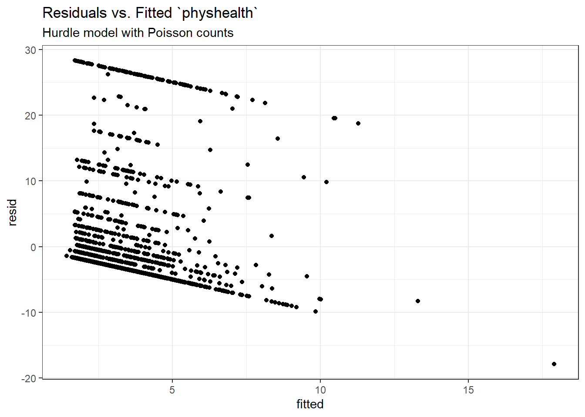
19.15.13 Predictions for Harry and Sally
The predictions from this zero-inflated negative binomial regression model are obtained as follows…
1 2
6.003020 2.057223 As we’ve seen in the past, when we use response as the type, the predictions fall on the original physhealth scale. The prediction for Harry is 6.0 days, and for Sally is 2.1 days.
19.16 A “hurdle” model (with negative binomial for overdispersion)
Let’s account for overdispersion better with a negative binomial model for the counts in our hurdle model. We specify that the positive-count process be fit with this NB model using dist = negbin.
mod_hur_nb1 <- hurdle(physhealth ~ bmi_c + smoke100,
dist = "negbin", zero.dist = "binomial",
data = sm_oh_A_young)
summary(mod_hur_nb1)
Call:
hurdle(formula = physhealth ~ bmi_c + smoke100, data = sm_oh_A_young,
dist = "negbin", zero.dist = "binomial")
Pearson residuals:
Min 1Q Median 3Q Max
-0.5750 -0.4178 -0.3949 -0.1164 6.4032
Count model coefficients (truncated negbin with log link):
Estimate Std. Error z value Pr(>|z|)
(Intercept) 1.541623 0.101012 15.262 < 2e-16 ***
bmi_c 0.024320 0.006766 3.595 0.000325 ***
smoke100 0.518044 0.111013 4.667 3.06e-06 ***
Log(theta) -0.882476 0.146527 -6.023 1.72e-09 ***
Zero hurdle model coefficients (binomial with logit link):
Estimate Std. Error z value Pr(>|z|)
(Intercept) -0.683512 0.062828 -10.879 < 2e-16 ***
bmi_c 0.027799 0.006506 4.273 1.93e-05 ***
smoke100 0.238285 0.095302 2.500 0.0124 *
---
Signif. codes: 0 '***' 0.001 '**' 0.01 '*' 0.05 '.' 0.1 ' ' 1
Theta: count = 0.4138
Number of iterations in BFGS optimization: 17
Log-likelihood: -3469 on 7 Df 2.5 % 97.5 %
count_(Intercept) 1.34364327 1.73960361
count_bmi_c 0.01105959 0.03758073
count_smoke100 0.30046338 0.73562479
zero_(Intercept) -0.80665212 -0.56037208
zero_bmi_c 0.01504727 0.04055037
zero_smoke100 0.05149634 0.4250730019.16.1 Comparison to a null model
To show that this model fits better than the null model (the model with intercept only), we can compare them directly with a chi-squared test. Since we have two predictors in the full model, the degrees of freedom for this test is 2.
mod_hur_nb_null <- hurdle(physhealth ~ 1, dist = "negbin",
zero.dist = "binomial",
data = sm_oh_A_young)
summary(mod_hur_nb_null)
Call:
hurdle(formula = physhealth ~ 1, data = sm_oh_A_young, dist = "negbin",
zero.dist = "binomial")
Pearson residuals:
Min 1Q Median 3Q Max
-0.4048 -0.4048 -0.4048 -0.1622 3.2340
Count model coefficients (truncated negbin with log link):
Estimate Std. Error z value Pr(>|z|)
(Intercept) 1.77653 0.09641 18.427 < 2e-16 ***
Log(theta) -1.04455 0.16123 -6.479 9.25e-11 ***
Zero hurdle model coefficients (binomial with logit link):
Estimate Std. Error z value Pr(>|z|)
(Intercept) -0.5768 0.0469 -12.3 <2e-16 ***
---
Signif. codes: 0 '***' 0.001 '**' 0.01 '*' 0.05 '.' 0.1 ' ' 1
Theta: count = 0.3518
Number of iterations in BFGS optimization: 12
Log-likelihood: -3498 on 3 Df'log Lik.' 2.131581e-13 (df=7)19.16.2 Comparison to a Negative Binomial Model: Vuong test
Vuong Non-Nested Hypothesis Test-Statistic:
(test-statistic is asymptotically distributed N(0,1) under the
null that the models are indistinguishible)
-------------------------------------------------------------
Vuong z-statistic H_A p-value
Raw 3.096582 model1 > model2 0.00097883
AIC-corrected 2.485255 model1 > model2 0.00647294
BIC-corrected 0.777262 model1 > model2 0.21850211The hurdle model is a significant improvement over the standard negative binomial model according to the raw and AIC-corrected versions of this test, but not the BIC-corrected version.
19.16.3 Comparison to a Zero-Inflated NB Model: Vuong test
Is the hurdle model comparable to the zero-inflated Poisson?
Vuong Non-Nested Hypothesis Test-Statistic:
(test-statistic is asymptotically distributed N(0,1) under the
null that the models are indistinguishible)
-------------------------------------------------------------
Vuong z-statistic H_A p-value
Raw 0.9172985 model1 > model2 0.17949
AIC-corrected 0.9172985 model1 > model2 0.17949
BIC-corrected 0.9172985 model1 > model2 0.17949The hurdle model is just barely a significant improvement over the zero-inflated Negative Binomial model.
19.16.4 Comparing the Hurdle Models with AIC and BIC
[1] 11371.66[1] 11405.19[1] 6952.147[1] 6991.261The negative binomial approach certainly looks better than the Poisson here.
19.16.5 The Fitted Equation
The form of the model equation for this hurdle also requires us to take two separate models into account. First we have a logistic regression model to predict the log odds of zero physhealth days. That takes care of the zeros. Then, to predict the number of physhealth days, we use a truncated negative binomial model, which is truncated to produce only estimates greater than zero, with \(\theta\) estimated as exp(-1.123) or 0.325.
19.16.6 Interpreting the Coefficients
We can exponentiate the logistic regression coefficients to obtain results in terms of odds ratios for that model, and that can be of some help in understanding the process behind excess zeros.
count_(Intercept) count_bmi_c count_smoke100 zero_(Intercept)
4.6721691 1.0246183 1.6787410 0.5048408
zero_bmi_c zero_smoke100
1.0281888 1.2690704 For example,
- in the model for
physhealth= 0, the odds ofphyshealth= 0 are 127% as high for subjects withsmoke100= 1 as for non-smokers with the same BMI.
19.16.7 Testing the Predictors
We can test the model with and without bmi_c, for example, by fitting the model both ways, and comparing the results with either a Wald or Likelihood Ratio test, each of which is available in the lmtest package.
mod_hurnb1_nobmi <- hurdle(physhealth ~ smoke100,
dist = "negbin",
zero.dist = "binomial",
data = sm_oh_A_young)
lmtest::waldtest(mod_hur_nb1, mod_hurnb1_nobmi)Wald test
Model 1: physhealth ~ bmi_c + smoke100
Model 2: physhealth ~ smoke100
Res.Df Df Chisq Pr(>Chisq)
1 1967
2 1969 -2 31.178 1.697e-07 ***
---
Signif. codes: 0 '***' 0.001 '**' 0.01 '*' 0.05 '.' 0.1 ' ' 1Likelihood ratio test
Model 1: physhealth ~ bmi_c + smoke100
Model 2: physhealth ~ smoke100
#Df LogLik Df Chisq Pr(>Chisq)
1 7 -3469.1
2 5 -3485.0 -2 31.852 1.212e-07 ***
---
Signif. codes: 0 '***' 0.001 '**' 0.01 '*' 0.05 '.' 0.1 ' ' 119.16.8 Store fitted values and residuals
Again we need to build up the fitted values and residuals, without broom to help.
sm_hur_nb1 <- sm_oh_A_young %>%
mutate(fitted = fitted(mod_hur_nb1, type = "response"),
resid = resid(mod_hur_nb1, type = "response"))
sm_hur_nb1 %>%
dplyr::select(physhealth, fitted, resid) %>%
head()# A tibble: 6 x 3
physhealth fitted resid
<dbl> <dbl> <dbl>
1 0 2.16 -2.16
2 0 2.23 -2.23
3 0 3.09 -3.09
4 30 5.36 24.6
5 0 3.15 -3.15
6 0 3.76 -3.7619.16.9 Rootogram for NB Hurdle Model
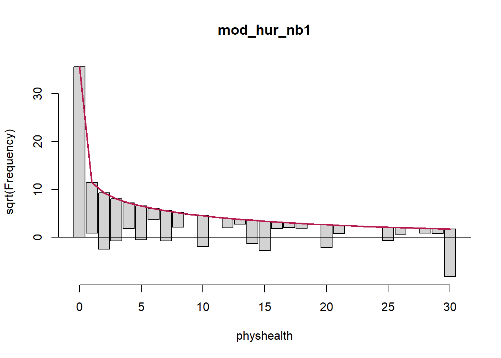
This improves the situation, but we’re still underfitting the 30s.
19.16.10 Specify the R2 and log (likelihood) values
We can calculate a proxy for R2 as the squared correlation of the fitted values and the observed values.
# The correlation of observed and fitted values
(hurnb1_r <- with(sm_hur_nb1, cor(physhealth, fitted)))[1] 0.1857714[1] 0.03451103'log Lik.' -3469.073 (df=7)Here, we have
| Model | Scale | R2 | log(likelihood) |
|---|---|---|---|
| Hurdle Model (Neg. Bin.) | Complex: log(physhealth) |
.035 | -3469.07 |
19.16.11 Check model assumptions
Here is a plot of residuals vs. fitted values on the original physhealth scale.
ggplot(sm_hur_nb1, aes(x = fitted, y = resid)) +
geom_point() +
labs(title = "Residuals vs. Fitted `physhealth`",
subtitle = "Hurdle model with Negative Binomial counts")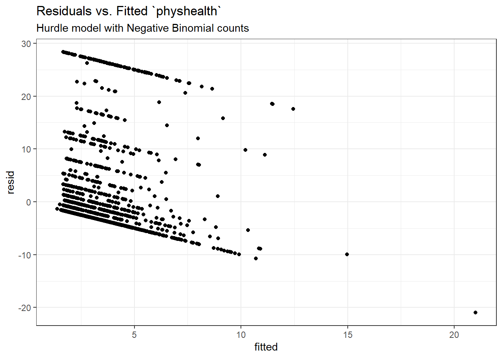
19.16.12 Predictions for Harry and Sally
The predictions from this zero-inflated negative binomial regression model are obtained as follows…
1 2
6.221984 2.006983 The prediction for Harry is 6.22 days, and for Sally is 2.01 days.
19.16.13 Note: Fitting a Different Hurdle Model for Counts and Pr(zero)
Suppose we wanted to use only bmi_c to predict the probability of a zero count, but use both predictors in the model for the positive counts. We use the | command.
mod_hur_new1 <-
hurdle(physhealth ~ bmi_c + smoke100 | bmi_c,
dist = "negbin", zero.dist = "binomial",
data = sm_oh_A_young)
summary(mod_hur_new1)
Call:
hurdle(formula = physhealth ~ bmi_c + smoke100 | bmi_c, data = sm_oh_A_young,
dist = "negbin", zero.dist = "binomial")
Pearson residuals:
Min 1Q Median 3Q Max
-0.5632 -0.4179 -0.3970 -0.1150 6.1966
Count model coefficients (truncated negbin with log link):
Estimate Std. Error z value Pr(>|z|)
(Intercept) 1.541623 0.101012 15.262 < 2e-16 ***
bmi_c 0.024320 0.006766 3.595 0.000325 ***
smoke100 0.518044 0.111013 4.667 3.06e-06 ***
Log(theta) -0.882476 0.146527 -6.023 1.72e-09 ***
Zero hurdle model coefficients (binomial with logit link):
Estimate Std. Error z value Pr(>|z|)
(Intercept) -0.581867 0.047184 -12.332 < 2e-16 ***
bmi_c 0.028549 0.006488 4.401 1.08e-05 ***
---
Signif. codes: 0 '***' 0.001 '**' 0.01 '*' 0.05 '.' 0.1 ' ' 1
Theta: count = 0.4138
Number of iterations in BFGS optimization: 17
Log-likelihood: -3472 on 6 Df19.16.14 Hanging Rootogram for this new Hurdle Model
Not a meaningful improvement, certainly.
19.17 A Tobit (Censored) Regression Model
The idea of the tobit model (sometimes called a censored regression model) is to estimate associations for outcomes where we can see either left-censoring (censoring from below) or right-censoring (censoring from above.)
Consider the variable physhealth, which is restricted to fall between 0 and 30 by the way the measure was constructed. But supposed we think about a broader and latent (unobserved) variable describing physical health. Among the people with physhealth = 0, some would be incredible athletes and others would be in much poorer physical health but still healthy enough to truthfully answer 0. On the other end, some of the people responding 30 are in substantially worse physical health than others with that same response.
- Censoring from below takes place when values at or below a threshold (in this case 0) take that value.
- Censoring from above takes place when values at or above a threshold (here, 30) take that value.
Several examples of tobit analysis are available at https://stats.idre.ucla.edu/r/dae/tobit-models/, which is my primary source for the material here on those models.
The tobit model postulates that the value 0 in our model is just the lower limit of the underlying measure of poor physical health that we would actually observe in the population if we had a stronger measure. Similarly, we’ll postulate that 30 is just the upper limit of “poor health” that we can see. The approach I’ll take to run the tobit model comes from the vglm function in the VGAM package.
Here’s the model, and its summary. Note that the default Lower value for a tobit model is 0, so we didn’t technically have to list that here.
mod_tob1 <- vglm(physhealth ~ bmi_c + smoke100,
tobit(Lower = 0, Upper = 30),
type.fitted = "censored",
data = sm_oh_A_young)
summary(mod_tob1)
Call:
vglm(formula = physhealth ~ bmi_c + smoke100, family = tobit(Lower = 0,
Upper = 30), data = sm_oh_A_young, type.fitted = "censored")
Pearson residuals:
Min 1Q Median 3Q Max
mu -2.502 -0.6632 -0.5202 1.122 2.144
loglink(sd) -1.079 -0.2988 -0.2605 -0.174 7.419
Coefficients:
Estimate Std. Error z value Pr(>|z|)
(Intercept):1 -9.29087 0.75508 -12.304 < 2e-16 ***
(Intercept):2 2.87080 0.03028 94.817 < 2e-16 ***
bmi_c 0.37449 0.06534 5.731 9.97e-09 ***
smoke100 4.35362 0.97221 4.478 7.53e-06 ***
---
Signif. codes: 0 '***' 0.001 '**' 0.01 '*' 0.05 '.' 0.1 ' ' 1
Names of linear predictors: mu, loglink(sd)
Log-likelihood: -3420.577 on 3944 degrees of freedom
Number of Fisher scoring iterations: 6
No Hauck-Donner effect found in any of the estimates 2.5 % 97.5 %
(Intercept):1 -10.7708120 -7.8109366
(Intercept):2 2.8114548 2.9301394
bmi_c 0.2464249 0.5025624
smoke100 2.4481170 6.259118719.17.1 The Fitted Equation
Because we’ve used the censoring approach, our model will limit its predictions to the range of [0, 30], where any predictions outside that range are censored. Values below 0 are fitted as 0, and values above 30 are fitted as 30.
The model equation is
physhealth = -9.29 + 0.37 bmi_c + 4.35 smoke10019.17.2 Interpreting the Coefficients
Tobit model regression coefficients are interpreted as we would a set of OLS coefficients, except that the linear effect is on the uncensored latent variable, rather than on the observed outcome.
In our case,
- a one-unit increase in
bmi_cis associated with a 0.37 day increase in the predicted value ofphyshealth, holdingsmoke100constant - a move from
smoke100= 0 to 1 is associated with a 4.35 day increase in the predicted value ofphyshealth, holdingbmi_cconstant - the coefficient labeled
(Intercept):1is the intercept for the model and is the predicted value ofphyshealthwhensmoke100= 0 andbmi_c= 0. Note that this value is -9.29, which is outside the range ofphyshealthvalues we observed. - the coefficient labeled
(Intercept):2is a statistic we can use after we exponentiate it, as follows:- here
(Intercept):2= 2.87, and exp(2.87) = 17.6370182, which is analogous to the square root of the residual variance in OLS regression, which is summarized for our OLS model asResidual standard error: 17.64.
- here
19.17.3 Testing the Predictors
We can test the model with and without bmi_c, for example, by fitting the model both ways, and comparing the results with either a Wald or Likelihood Ratio test, each of which is available in the lmtest package.
mod_tob_nobmi <- vglm(physhealth ~ smoke100,
tobit(Lower = 0, Upper = 30),
type.fitted = "censored",
data = sm_oh_A_young)
lmtest::waldtest(mod_tob1, mod_tob_nobmi)Wald test
Model 1: physhealth ~ bmi_c + smoke100
Model 2: physhealth ~ smoke100
Res.Df Df Chisq Pr(>Chisq)
1 3944
2 3945 -1 32.847 9.969e-09 ***
---
Signif. codes: 0 '***' 0.001 '**' 0.01 '*' 0.05 '.' 0.1 ' ' 1The likelihood ratio test we have used in some other settings isn’t available here.
19.17.4 Store fitted values and residuals
The residuals and fitted values from the tobit model can be stored and then summarized in several ways:
sm_tob1 <- sm_oh_A_young %>%
mutate(fitted = fitted(mod_tob1,
type.fitted = "censored"),
resid = physhealth - fitted)
sm_tob1 %>%
dplyr::select(physhealth, fitted, resid) %>%
head()# A tibble: 6 x 3
physhealth fitted[,1] resid[,1]
<dbl> <dbl> <dbl>
1 0 0 0
2 0 0 0
3 0 0 0
4 30 0 30
5 0 0 0
6 0 0 019.17.5 Building Something Like a Rootogram
Building a rootogram is tricky for a tobit model, to say the least, but we can approximate a piece of the issue by plotting the rounded fitted values against the observed physhealth data.
ggplot(sm_tob1, aes(x = physhealth, y = round(fitted))) +
geom_jitter(width = 0.2) +
geom_abline(intercept = 0, slope = 1, col = "red")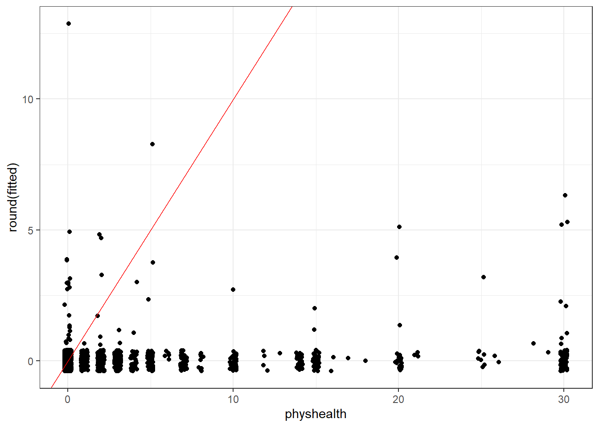
Note that the model never predicts a subject to have an underlying physhealth worse than about 13 (remember that larger numbers indicate worse health here.)
19.17.6 Tables of the Observed and Fitted physhealth from Tobit
0 1 2 3 4 5 6 7 8 10 12 13 14 15 16 17
1264 112 139 78 29 50 5 40 9 41 4 1 24 38 2 1
18 20 21 25 26 28 29 30 Sum
1 23 3 8 2 1 1 98 1974
0 1 2 3 4 5 6 8 13 Sum
1924 20 7 10 4 6 1 1 1 1974 19.17.7 Specify the R2 and log (likelihood) values
We can calculate a proxy for R2 as the squared correlation of the fitted values and the observed values.
[,1]
[1,] 0.09375752 [,1]
[1,] 0.008790473[1] -3420.577Here, we have
| Model | Scale | R2 | log(likelihood) |
|---|---|---|---|
| Tobit | physhealth |
.008 | -3420.58 |
19.17.8 Check model assumptions
Here is a plot of residuals vs. fitted values.
ggplot(sm_tob1, aes(x = fitted, y = resid)) +
geom_point() +
labs(title = "Residuals vs. Fitted Values for Tobit 1")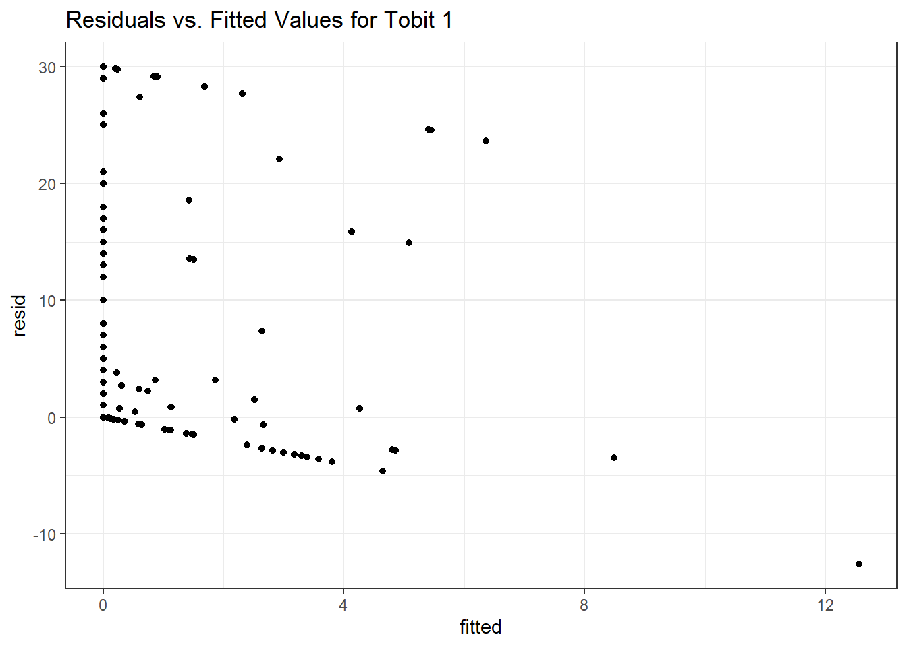
Here is a normal Q-Q plot of the Tobit Model 1 residuals.
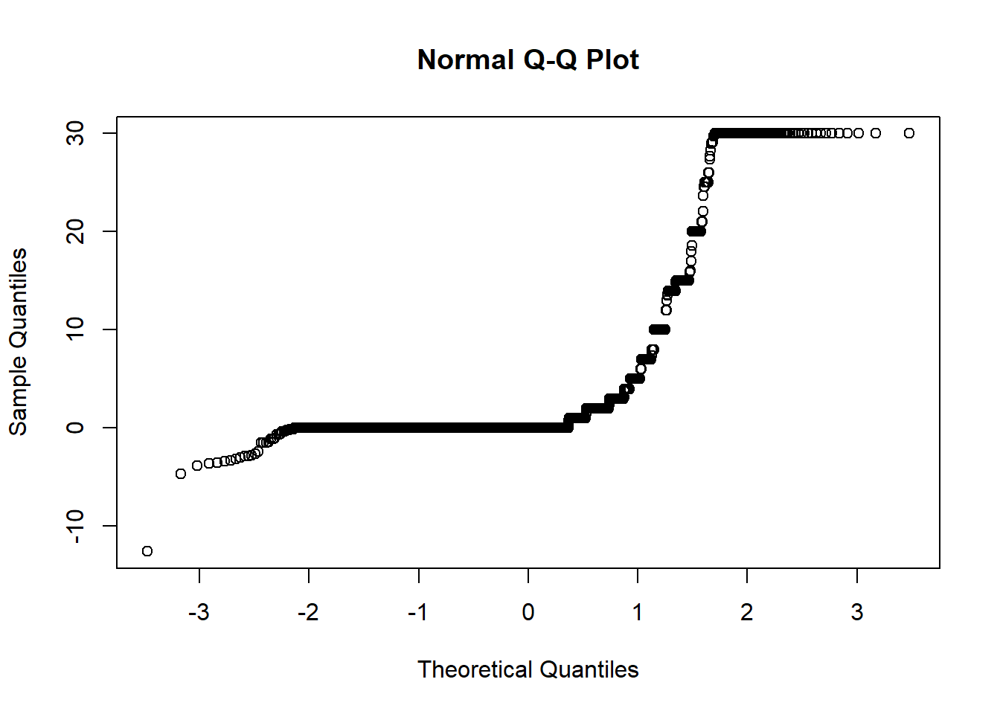
19.17.9 Predictions for Harry and Sally
The predictions from this tobit model are obtained as follows…
[,1]
1 -1.19232
2 -11.16334The prediction for both Harry and Sally under the tobit model would be truncated to 0 days.
This discussion is motivated by Section 6.2 of Gelman and Hill.↩
See http://data.library.virginia.edu/getting-started-with-negative-binomial-regression-modeling/↩
See Zeileis A Kleiber C Jackman S Regression Models for Count Data in R Vignette at https://cran.r-project.org/web/packages/pscl/vignettes/countreg.pdf↩
See https://cran.r-project.org/web/packages/pscl/vignettes/countreg.pdf for more details.↩
This \(\theta\) is the inverse of the dispersion parameter estimated for these models by most other software packages, like SAS, Stata and SPSS. See https://stats.idre.ucla.edu/r/dae/negative-binomial-regression/ for more details.↩
See http://data.library.virginia.edu/getting-started-with-negative-binomial-regression-modeling/↩
See https://stats.idre.ucla.edu/r/dae/zip/ for more on the zero-inflated poisson model.↩
http://data.library.virginia.edu/getting-started-with-hurdle-models/ is an excellent introduction, by Clay Ford, a Statistical Research Consultant at the University of Virginia Library. I can also recommend https://rpubs.com/kaz_yos/pscl-2 as a place to learn more about the
psclpackage, and the fitting and interpretation of both hurdle and zero-inflated regression models. Thatrpubssite has a link to this article by Hu, Pavlicova and Nunes from the Am J Drug Alcohol Abuse which provides a real set of examples from a trial of a behavioral health intervention meant to reduce the risk of unprotected sexual occasions as part of a strategy to reduce HIV risk.↩